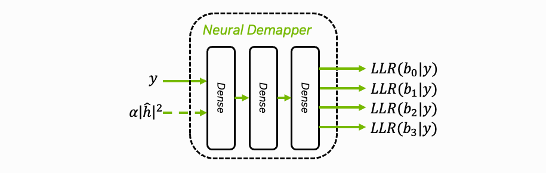
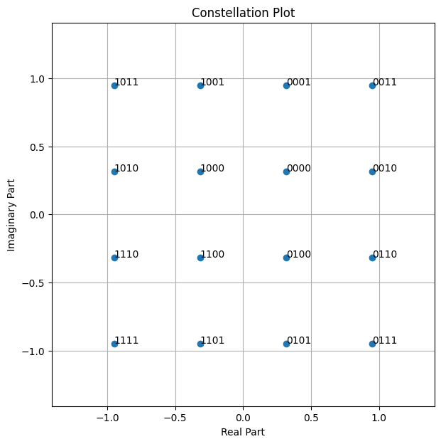
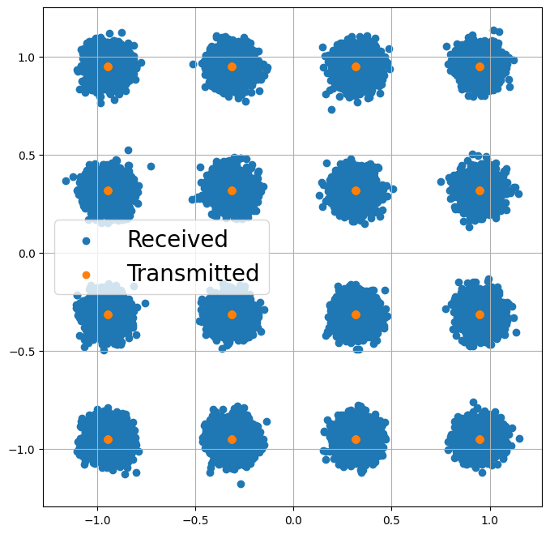
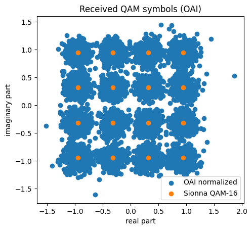
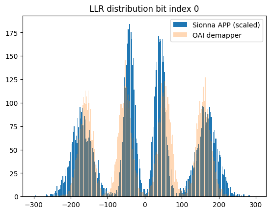
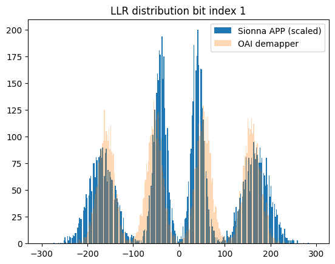
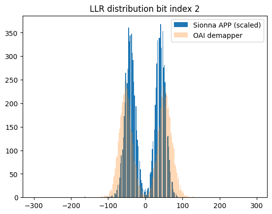
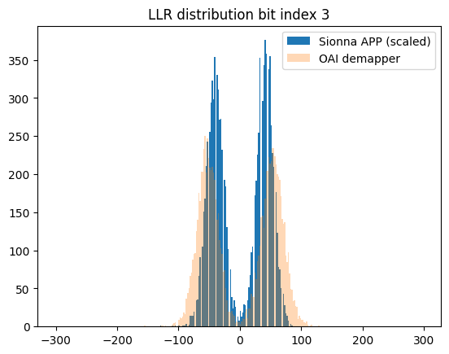

Neural Demapper Training and TensorRT Export#

This first part of the tutorial covers training and implementation of a neural network (NN)-based demapper using Sionna. We keep the neural network architecture straightforward to focus on efficient inference and the integration in the OAI stack.
While we use demapping as our example since it is a simple and well-understood task, neural networks could potentially replace many signal processing blocks like channel estimation or equalization. The main focus here is demonstrating how to integrate neural network (NN) components into the physical layer’s signal processing pipeline.
An important aspect is that OAI does not provide an estimate of the noise variance as required for textbook-style a posteriori probability (APP) demappers but provides a scaled version of the magnitude of the channel estimates. This will be explained in the following.
Python Imports#
[1]:
# Import the required libraries
import os # Configure which GPU
if os.getenv("CUDA_VISIBLE_DEVICES") is None:
gpu_num = 0 # Use "" to use the CPU
os.environ["CUDA_VISIBLE_DEVICES"] = f"{gpu_num}"
import numpy as np
import torch
import torch.nn as nn
# Import Sionna
import sionna as sn
# For plotting
%matplotlib inline
import matplotlib.pyplot as plt
# For saving complex Python data structures efficiently
import pickle
# For ONNX / TensorRT export
import onnx
# Set seed for reproducible results
sn.phy.config.seed = 42
Background: APP-Demapping#
We assume a sequence of modulation order bits \(b\) which are mapped to a complex-valued QAM symbol. At the receiver, a noisy version of this symbol \(y\) is observed and the task of the demapper is to calculate the individual a posteriori probabilities (APP) that each bit was 0 or 1.
In this tutorial, we will use 16-QAM modulation as example. While the demapper can be extended to other modulation orders in a straightforward manner, we focus on 16-QAM for clarity. Note that with Gray-labeling, it is possible to use a higher-order demapper (e.g., 64-QAM) to demap lower-order modulations (e.g., 16-QAM) by discarding unused bits. However, this introduces unnecessary computational complexity and is not explored in this tutorial.
[2]:
# Let's visualize all possible symbols for a 16-QAM
NUM_BITS_PER_SYMBOL = 4
mapper = sn.phy.mapping.Mapper("qam", NUM_BITS_PER_SYMBOL)
demapper = sn.phy.mapping.Demapper("app", "qam", NUM_BITS_PER_SYMBOL)
mapper.constellation.show();

The above constellation diagram uses Gray labeling as used in the 5G standard.
After transmission over a noise channel the received symbols can be visualized.
[3]:
# Binary source to generate uniform i.i.d. bits
binary_source = sn.phy.mapping.BinarySource()
# AWGN channel
awgn_channel = sn.phy.channel.AWGN()
BATCH_SIZE = 128 # How many examples are processed by Sionna in parallel
EBN0_DB = 17.0 # Eb/N0 in dB
no = sn.phy.utils.ebnodb2no(ebno_db=EBN0_DB,
num_bits_per_symbol=NUM_BITS_PER_SYMBOL,
coderate=1.0) # Coderate set to 1 as we do uncoded transmission here
bits = binary_source([BATCH_SIZE, 1200]) # Blocklength
x = mapper(bits)
y = awgn_channel(x, no)
[4]:
# Let's visualize the received symbols
plt.figure(figsize=(8,8))
plt.axes().set_aspect(1.0)
plt.grid(True)
plt.scatter(y.real.detach().cpu().numpy(), y.imag.detach().cpu().numpy(), label='Received')
plt.scatter(x.real.detach().cpu().numpy(), x.imag.detach().cpu().numpy(), label='Transmitted')
plt.legend(fontsize=20);

The task of the demapper is now to calculate the a posterior probabilities (APP) \(p(b_i=1|y)\) and \(p(b_i=0|y)\) that the \(i\)-th bit was 0 or 1 given the received symbol \(y\). Typically, this is done by calculating log likelihood ratios (LLRs), i.e., logits instead of working in the probability domain.
For the \(i\)-th bit the LLR is defined as \(LLR(b_i) = \log[ \frac{p(b_i=1)}{p(b_i=0)}]\)
One can show that the optimal APP demapping rule for an AWGN channel and the \(i\)-th bit can be computed as
Note that simplifications such as max-log demapping exist.
From the above equation, we see that the neural demapper requires the received complex-valued symbol \(y\) and the noise variance \(N_0\) as input. It returns modulation order LLRs. We can use the Sionna APP demapper as a reference implementation to verify the performance of the neural demapper.
[5]:
bits = np.array([[0,0,0,1]])
print("Original bits:", bits)
x = mapper(bits)
print("Complex-valued symbol:", x.detach().cpu().numpy())
# Add some noise
no = 0.05 # Noise variance
y = awgn_channel(x, no)
print("Received noisy symbol: ", y.detach().cpu().numpy())
llr = demapper(y, no)
print("LLRs after demapping:", llr.detach().cpu().numpy())
Original bits: [[0 0 0 1]]
Complex-valued symbol: [[0.31622776+0.94868326j]]
Received noisy symbol: [[0.21630567+1.1122236j]]
LLRs after demapping: [[ -5.4721756 -40.274567 -10.532042 12.1372795]]
If the sign of the LLR is positive, the value of the associated bit is more likely a “1”. Consequently, negative LLRs are associated to a bit value of “0”. The magnitude of the LLRs represents their reliability. This soft-information can be used by the forward error correction (FEC) decoder to recover from transmission errors.
The above equations are the optimal demapping rule for an AWGN channel. However, implementing the optimal demapper for unknown channels remains a challenge.
Understanding the OAI Data Structure#
Before we can start to train our neural demapper, we need to understand the OAI data structure and align the Sionna setup for training. For this, we use the captured data from the previous tutorial.
[6]:
import sys
sys.path.append('../../../')
MAX_LINES = 1000000 # Stop after this many imported lines
# Depends on config that was used for data capture
fn_input = '../../data_acquisition/logs/demapper_in.txt'
fn_output = '../../data_acquisition/logs/demapper_out.txt'
# Read training data from data dump
def read_training_data(in_file, element_shape):
with open(in_file) as f:
lines = f.readlines()
result = None
i = 0
while i < len(lines):
try:
i = lines.index('QAM16\n', i)
except ValueError as e:
break
num = int(lines[i+1])
#if num > 30:
# print(num)
data = np.fromstring(' '.join(lines[i+2:i+2+num]), sep=' ', dtype=np.int16).reshape(num, *element_shape)
if result is None:
result = data
else:
result = np.concatenate((result, data))
i += 2 + num
if i>MAX_LINES:
break
return result
def int16_to_float16(symbols_i):
return np.ldexp(symbols_i.astype(np.float32), -8).astype(np.float16)
def float16_to_int16(llrs_h):
return np.rint(np.ldexp(llrs_h.astype(np.float32), 8)).astype(np.int16)
def norm_int16_to_float16(symbols_i, magnitudes):
args = symbols_i.astype(np.float32)
if magnitudes is not None:
args = args / magnitudes.astype(np.float32)
return np.ldexp(args, 7).astype(np.float16)
data_in = read_training_data(fn_input, (2, 2))
data_out = read_training_data(fn_output, (4,))
assert(data_in.shape[0] == data_out.shape[0])
print("data_in.shape: ", data_in.shape)
print("data_out.shape: ", data_out.shape)
print("First 5 input symbols:", data_in[0:5,:])
print("First 5 output symbols:", data_out[0:5,:])
data_in.shape: (623850, 2, 2)
data_out.shape: (623850, 4)
First 5 input symbols: [[[ 168 -40]
[ 101 101]]
[[-184 137]
[ 101 101]]
[[-161 -80]
[ 107 107]]
[[-187 177]
[ 106 106]]
[[ -63 158]
[ 110 110]]]
First 5 output symbols: [[ 168 -40 -67 61]
[-184 137 -83 -36]
[-161 -80 -54 27]
[-187 177 -81 -71]
[ -63 158 47 -48]]
OAI uses integer representations of the input/output symbols. It requires scaling to be compatible with Sionna.
The second input values are the resulting channel estimation magnitudes and can be used for re-scaling. After re-scaling, the QAM symbols are scaled such that the first decision boundary equals to 1.0, i.e., the QAM constellation does not have unit power. We will now re-scale the recorded symbols and compare the resulting LLRs to the Sionna reference.
[7]:
x = data_in[:10000,...]
# OAI uses h as decision region between inner and outer bits
# We scale the received symbols y back such that y_n = y / h
y_n = x[:,0,0]/x[:,1,0] + 1.j*x[:,0,1]/x[:,1,1]
# This normalizes the first decision bound to 1,
# i.e., the center between inner and out constellation points.
# In the Sionna definition (i.e., power normalized QAM),
# the inner/outer points are at 0.3162278 and 0.9486833, respectively.
# Thus we need to scale y_n by s = 0.9486833 - 0.3162278
s = 0.9486833 - 0.3162278 # outer - inner constellation point
y = y_n * s
# Calculate average power of received symbols after normalization
avg_power = np.mean(np.abs(y)**2)
# Keep in mind there is some noise variance
print("Avg. power after norm:", avg_power)
# And plot results
plt.scatter(y.real, y.imag, label="OAI normalized")
plt.title("Received QAM symbols (OAI)")
plt.ylabel("imaginary part")
plt.xlabel("real part");
plt.gca().set_aspect('equal', adjustable='box');
# Overlay with Sionna constellations
c = sn.phy.mapping.Constellation("qam", 4).points.detach().cpu().numpy()
plt.scatter(c.real, c.imag, label="Sionna QAM-16")
plt.legend();
Avg. power after norm: 1.0227181519999766

As can be seen, after normalization the received data symbols match well to the Sionna QAM constellation.
Using the Sionna demapper as reference allows to compare the calculated LLRs with the recorded dataset to verify that also the outputs are correctly scaled. Note that OAI uses a heuristic demapper, i.e., the captured LLRs are not the ones we expect from APP demapping.
[10]:
# Create demapper on CPU for data analysis with captured numpy data
demapper_ref = sn.phy.mapping.Demapper("app", "qam", 4, device='cpu')
y_t = torch.tensor(y, dtype=torch.complex64)
# avg_power is signal power ps + no where ps = 1
ps = 1. # Signal power
no = torch.tensor(avg_power-ps, dtype=torch.float32)
llr = -1* demapper_ref(y_t, no) # Flip sign: Sionna uses log(P(1)/P(0)), OAI uses log(P(0)/P(1))
# Scale llrs
llr_ = llr.detach().numpy()
llr_ref = np.reshape(llr_.astype(int), (-1,4))
llr_oai = data_out[:llr_ref.shape[0],...]
# Debug: check LLR value ranges
print(f"Sionna LLR range: [{llr_ref.min()}, {llr_ref.max()}], mean={llr_ref.mean():.1f}, std={llr_ref.std():.1f}")
print(f"OAI LLR range: [{llr_oai.min()}, {llr_oai.max()}], mean={llr_oai.mean():.1f}, std={llr_oai.std():.1f}")
for b in range(4):
print(f" Bit {b}: Sionna=[{llr_ref[:,b].min()},{llr_ref[:,b].max()}] std={llr_ref[:,b].std():.1f} | OAI=[{llr_oai[:,b].min()},{llr_oai[:,b].max()}] std={llr_oai[:,b].std():.1f}")
# Scale Sionna LLRs to match OAI's int16 range for fair comparison
scale = llr_oai.std() / (llr_ref.std() + 1e-9)
llr_ref_scaled = (llr_ref * scale).astype(int)
print(f"LLR scale factor (OAI/Sionna): {scale:.2f}")
# Use wider bins to capture the full OAI range
r = np.arange(-300, 300, 2)
for bit_idx in range(4):
plt.figure()
plt.hist(llr_ref_scaled[:,bit_idx], bins=r, label="Sionna APP (scaled)")
plt.hist(llr_oai[:,bit_idx], bins=r, alpha=0.3, label="OAI demapper")
plt.legend();
plt.title(f"LLR distribution bit index {bit_idx}")
Sionna LLR range: [-143, 172], mean=0.1, std=38.8
OAI LLR range: [-257, 245], mean=0.4, std=94.0
Bit 0: Sionna=[-133,172] std=51.9 | OAI=[-242,245] std=120.6
Bit 1: Sionna=[-143,126] std=51.8 | OAI=[-257,237] std=120.4
Bit 2: Sionna=[-68,35] std=18.1 | OAI=[-162,129] std=56.3
Bit 3: Sionna=[-54,35] std=18.1 | OAI=[-156,129] std=56.2
LLR scale factor (OAI/Sionna): 2.42




The observed mismatch can be justified by the fact that OAI uses a heuristic demapper implementation.
The noise variance estimation itself is not available and the demapper must rely on the scaled channel magnitudes.
Neural Demapper#
The neural demapper must be operable with the OAI data structure as analyzed above. Further, we assume a fixed and static constellation, which means the network will learn the Gray labeling implicitly from the training data.
For this implementation, we create a simple neural demapper using the PyTorch nn.Module framework. The architecture consists of a basic 3-layer multilayer perceptron (MLP). While this architecture is intentionally kept simple for demonstration purposes, there is room for architectural optimization in real-world applications.
[11]:
class NeuralDemapper(nn.Module):
def __init__(self, num_bits_per_symbol, num_inputs=2):
"""Neural demapper using a simple 3-layer MLP
Inputs
------
[y_i, y_q] or [y_i, y_q, h_i, h_q]
list of tensors:
y_i: [batch_size, 1, 1], torch.float32
Real part of the received IQ symbols.
y_q: [batch_size, 1, 1], torch.float32
Imaginary part of the received IQ symbols.
optional:
h_i: [batch_size, 1, 1], torch.float32
Real part of the estimated channel magnitude.
h_q: [batch_size, 1, 1], torch.float32
Real part of the estimated channel magnitude.
Outputs
-------
llr: [batch_size, num_bits_per_symbol], torch.float32
LLRs for each bit of a symbol.
"""
super().__init__()
self.dense_1 = nn.Linear(num_inputs, 32)
self.dense_2 = nn.Linear(32, 32)
self.dense_3 = nn.Linear(32, num_bits_per_symbol)
self.relu = nn.ReLU()
def forward(self, inputs):
# Supports either a list of inputs or already concatenated version
nn_input = torch.cat(inputs, dim=-1) if isinstance(inputs, list) else inputs
z = self.relu(self.dense_1(nn_input))
z = self.relu(self.dense_2(z))
llr = self.dense_3(z) # [batch size, 1, num_bits_per_symbol]
return llr
As demapping is a binary classification task of the modulation order logits, we use the binary cross entropy (BCE) loss and average over the individual bits.
[12]:
NUM_BITS_PER_SYMBOL = 4 # 16-QAM
device = sn.phy.config.device
# Init components and move to same device as Sionna (e.g., cuda:0)
neural_demapper_synthetic = NeuralDemapper(NUM_BITS_PER_SYMBOL, num_inputs=2).to(device)
# Binary classification problem -> train on BCE loss
bce = nn.BCEWithLogitsLoss()
# Use ADAM optimizer
optimizer = torch.optim.Adam(neural_demapper_synthetic.parameters(), lr=1e-2)
print(neural_demapper_synthetic)
NeuralDemapper(
(dense_1): Linear(in_features=2, out_features=32, bias=True)
(dense_2): Linear(in_features=32, out_features=32, bias=True)
(dense_3): Linear(in_features=32, out_features=4, bias=True)
(relu): ReLU()
)
Blind Demapping & Training with Synthetic Data#
To simplify the training procedure, we use synthetic training data from Sionna.
We draw random payload bits, map them to QAM symbol and simulate the transmission over an AWGN channel. As this synthetic data generation procedure is so fast, we generate new training data in each iteration of the training loop.
As noise variance estimates are not available, we train the neural demapper with only two inputs (real and imaginary part of the received symbol, respectively). This obviously does not allow to reproduce exact APP estimates, but intuitively the demapper learns an average noise variance over all possible input SNRs. Keep in mind that the LDPC decoder is implemented as min-sum decoder which is know to be robust against mis-scaling of the LLRs.
To improve the neural demapper performance, in the next section we introduce another version which is trained on recorded data from the OAI testbed. This version takes as input also the channel estimates.
[13]:
BATCH_SIZE = 1024
NUM_TRAINING_ITERATIONS = 10000
# Scaling factor for QAM symbols to be compatible with the OAI demapper
qam16_threshold_mag = 2 * 0.3162278
neural_demapper_synthetic.train()
# Training loop
for i in range(NUM_TRAINING_ITERATIONS):
# we train with a randomized noise variance
no = torch.rand(BATCH_SIZE, 1)
# Draw random bits
bits = binary_source([BATCH_SIZE, NUM_BITS_PER_SYMBOL])
# Map to QAM symbols
x = mapper(bits)
# Transmit over Gaussian channel
y = awgn_channel(x, no)
# Split real and imaginary part and scale back to OAI
qxr = y.real * (1.0 / qam16_threshold_mag)
qxi = y.imag * (1.0 / qam16_threshold_mag)
optimizer.zero_grad()
llr = neural_demapper_synthetic([qxr, qxi])
loss = bce(-llr, bits.float()) # Negate: OAI convention is flipped vs Sionna
loss.backward()
optimizer.step()
# Print progress
if i % 500 == 0:
print(f"{i}/{NUM_TRAINING_ITERATIONS} Loss: {loss.item():.2E}")
0/10000 Loss: 6.90E-01
500/10000 Loss: 4.27E-01
1000/10000 Loss: 4.47E-01
1500/10000 Loss: 4.39E-01
2000/10000 Loss: 4.31E-01
2500/10000 Loss: 4.05E-01
3000/10000 Loss: 4.13E-01
3500/10000 Loss: 4.28E-01
4000/10000 Loss: 4.25E-01
4500/10000 Loss: 4.27E-01
5000/10000 Loss: 4.29E-01
5500/10000 Loss: 4.26E-01
6000/10000 Loss: 4.28E-01
6500/10000 Loss: 4.46E-01
7000/10000 Loss: 4.36E-01
7500/10000 Loss: 4.22E-01
8000/10000 Loss: 4.26E-01
8500/10000 Loss: 4.20E-01
9000/10000 Loss: 4.36E-01
9500/10000 Loss: 4.29E-01
Let’s have a look at the outputs after training.
[15]:
bits = np.array([[0,1,1,1]])
print("Original bits:", bits)
x = mapper(bits)
print("Complex-valued symbol:", x.detach().cpu().numpy())
# Add some noise
no = torch.tensor([[0.4]], device=device) # Noise variance
y = awgn_channel(x, no)
print("Received noisy symbol: ", y.detach().cpu().numpy())
print(y)
neural_demapper_synthetic.eval()
llr_ref = demapper(y, no)
llr_nn = -neural_demapper_synthetic([y.real / qam16_threshold_mag,
y.imag / qam16_threshold_mag])
print("LLRs Reference:", llr_ref)
print("LLRs NRX :", llr_nn)
Original bits: [[0 1 1 1]]
Complex-valued symbol: [[0.94868326-0.94868326j]]
Received noisy symbol: [[0.56786597-0.37550128j]]
tensor([[0.5679-0.3755j]], device='cuda:0')
LLRs Reference: tensor([[-2.3698, 1.5142, -0.3533, -1.0508]], device='cuda:0')
LLRs NRX : tensor([[-2.1164, 1.5778, -0.3794, -1.1090]], device='cuda:0',
grad_fn=<NegBackward0>)
As can be seen, the outputs of the neural demapper are close to the (optimal) Sionna reference APP-demapper.
[ ]:
# Save weights for synthetic demapper
fn = "../models/neural_demapper_weights_y2"
torch.save(neural_demapper_synthetic.state_dict(), fn)
Improved Demapping & Training with Captured Data#
To improve the performance of the neural demapper, we now also take OAI’s channel estimates into account. Thus, the demapper has two complex-valued inputs (i.e., 4 real-valued), the received symbol and the channel estimate. Both are scaled integers as described earlier. Note that the scaled channel estimates of OAI that are provided to the demapper share the same real and imaginary component. Thus, 3 inputs would be sufficient, but we keep the same data structure and feed 4 inputs to the neural demapper.
The following code snippets can be used to train with recorded data from the previous tutorial.
In case of real-world data, we can use the mean squared error (MSE) loss and interpret the task as a regression problem. In this case, the labels are the outputs of the OAI demapper. Note that this includes erroneous decisions in the training data. A better approach is to use the corrected labels either by transmitting a known sequence or by using the LDPC decoder for error correction [Schibisch2018]. However, this is beyond the scope of this tutorial.
[16]:
###########################################################################
# The following code is only relevant if training is done on captured data!
###########################################################################
# Depends on config that was used for data capture
fn_input = '../../data_acquisition/logs/demapper_in.txt'
fn_output = '../../data_acquisition/logs/demapper_out.txt'
# Requires data dump from the previous tutorial
demapper_in_data = read_training_data(fn_input, (2, 2))
demapper_out_data = read_training_data(fn_output, (4,))
assert(demapper_in_data.shape[0] == demapper_out_data.shape[0])
print("Training data size: ", demapper_out_data.shape[0])
Training data size: 623850
[17]:
# Regression loss for training on captured data
rge = nn.MSELoss()
# Init new receiver (4 inputs: y_i, y_q, h_i, h_q)
neural_demapper_capture = NeuralDemapper(NUM_BITS_PER_SYMBOL, num_inputs=4).to(device)
# Use ADAM optimizer
optimizer = torch.optim.Adam(neural_demapper_capture.parameters(), lr=1e-2)
print(neural_demapper_capture)
NeuralDemapper(
(dense_1): Linear(in_features=4, out_features=32, bias=True)
(dense_2): Linear(in_features=32, out_features=32, bias=True)
(dense_3): Linear(in_features=32, out_features=4, bias=True)
(relu): ReLU()
)
[18]:
neural_demapper_capture.train()
# Training loop
for i in range(NUM_TRAINING_ITERATIONS):
# Train on captured data
idx = np.random.randint(0, demapper_in_data.shape[0] - BATCH_SIZE)
llr_ref = demapper_out_data[idx:idx+BATCH_SIZE]
y_no = demapper_in_data[idx:idx+BATCH_SIZE]
llr_ref = torch.tensor(int16_to_float16(llr_ref), dtype=torch.float32, device=device)
y_no = torch.tensor(int16_to_float16(y_no), dtype=torch.float32, device=device)
optimizer.zero_grad()
llr = neural_demapper_capture(y_no.reshape(-1, 4))
loss = rge(llr, llr_ref)
loss.backward()
optimizer.step()
# Print progress
if i % 500 == 0:
print(f"{i}/{NUM_TRAINING_ITERATIONS} Loss: {loss.item():.2E}")
0/10000 Loss: 1.29E-01
500/10000 Loss: 4.39E-05
1000/10000 Loss: 1.06E-05
1500/10000 Loss: 1.91E-05
2000/10000 Loss: 1.32E-05
2500/10000 Loss: 1.57E-05
3000/10000 Loss: 4.58E-06
3500/10000 Loss: 1.33E-04
4000/10000 Loss: 1.59E-05
4500/10000 Loss: 5.64E-05
5000/10000 Loss: 1.02E-05
5500/10000 Loss: 2.54E-04
6000/10000 Loss: 2.51E-06
6500/10000 Loss: 1.65E-05
7000/10000 Loss: 1.05E-04
7500/10000 Loss: 8.65E-06
8000/10000 Loss: 2.05E-06
8500/10000 Loss: 7.95E-07
9000/10000 Loss: 2.70E-04
9500/10000 Loss: 9.90E-06
[19]:
# Save weights of captured demapper
fn = "../models/neural_demapper_weights_y4"
torch.save(neural_demapper_capture.state_dict(), fn)
Note that this implementation of the demapper has four inputs instead of the two normalized inputs from the synthetic demapper. However, due to the lack of ground truth information, the training data is only as good as the OAI heuristic demapper.
One could use the LDPC decoder to reconstruct improved labels as done in [Schibisch2018]. However, this is beyond the scope of this tutorial.
Export TensorRT Engine#
We can now export the model including its weights such that it can be loaded in TensorRT.
TensorRT is a toolset to achieve high-performance deep learning inference. As input it requires the ONNX export of a trained model.
[20]:
synthetic = True
if synthetic:
num_inputs = 2 # 2xfloat16
else:
num_inputs = 4 # 4xfloat16
fn = f"../models/neural_demapper_weights_y{num_inputs}"
neural_demapper = NeuralDemapper(NUM_BITS_PER_SYMBOL, num_inputs=num_inputs).to('cpu')
neural_demapper.load_state_dict(torch.load(fn, map_location='cpu'))
neural_demapper.eval()
[20]:
NeuralDemapper(
(dense_1): Linear(in_features=2, out_features=32, bias=True)
(dense_2): Linear(in_features=32, out_features=32, bias=True)
(dense_3): Linear(in_features=32, out_features=4, bias=True)
(relu): ReLU()
)
We now convert the model to the ONNX file format and build the TensorRT engine.
Note that you may need to fix the trtexec path (requires restart the Jupyter notebook) via export PATH=$PATH:/usr/src/tensorrt/bin.
[21]:
bs_max = 512 # max batch size for inference
# Convert model to float16 for export
neural_demapper.half()
dummy_input = torch.randn(1, num_inputs, dtype=torch.float16)
onnx_path = f"../models/neural_demapper.{num_inputs}xfloat16.onnx"
torch.onnx.export(
neural_demapper,
dummy_input,
onnx_path,
input_names=["y"],
output_names=["output_1"],
dynamic_axes={"y": {0: "batch_size"}, "output": {0: "batch_size"}},
opset_version=17
)
onnx_model = onnx.load(onnx_path)
onnx.checker.check_model(onnx_model)
# And build trtengine
trt_command = f'/usr/src/tensorrt/bin/trtexec --fp16'
trt_command += f' --onnx=../models/neural_demapper.{num_inputs}xfloat16.onnx'
trt_command += f' --saveEngine=../models/neural_demapper.{num_inputs}xfloat16.plan'
trt_command += f' --preview=+profileSharing0806'
trt_command += f' --inputIOFormats=fp16:chw'
trt_command += f' --outputIOFormats=fp16:chw'
trt_command += f" --minShapes=y:1x{num_inputs}"
trt_command += f" --optShapes=y:{64}x{num_inputs}"
trt_command += f" --maxShapes=y:{bs_max}x{num_inputs}"
# And run the command
os.system(trt_command)
/tmp/ipykernel_268561/2692043770.py:9: UserWarning: # 'dynamic_axes' is not recommended when dynamo=True, and may lead to 'torch._dynamo.exc.UserError: Constraints violated.' Supply the 'dynamic_shapes' argument instead if export is unsuccessful.
torch.onnx.export(
W0409 14:28:35.533000 268561 torch/onnx/_internal/exporter/_compat.py:133] Setting ONNX exporter to use operator set version 18 because the requested opset_version 17 is a lower version than we have implementations for. Automatic version conversion will be performed, which may not be successful at converting to the requested version. If version conversion is unsuccessful, the opset version of the exported model will be kept at 18. Please consider setting opset_version >=18 to leverage latest ONNX features
W0409 14:28:35.739000 268561 torch/onnx/_internal/exporter/_registration.py:110] torchvision is not installed. Skipping torchvision::nms
W0409 14:28:35.741000 268561 torch/onnx/_internal/exporter/_registration.py:110] torchvision is not installed. Skipping torchvision::roi_align
W0409 14:28:35.743000 268561 torch/onnx/_internal/exporter/_registration.py:110] torchvision is not installed. Skipping torchvision::roi_pool
[torch.onnx] Obtain model graph for `NeuralDemapper([...]` with `torch.export.export(..., strict=False)`...
[torch.onnx] Obtain model graph for `NeuralDemapper([...]` with `torch.export.export(..., strict=False)`... ✅
[torch.onnx] Run decompositions...
/usr/lib/python3.12/copyreg.py:99: FutureWarning: `isinstance(treespec, LeafSpec)` is deprecated, use `isinstance(treespec, TreeSpec) and treespec.is_leaf()` instead.
return cls.__new__(cls, *args)
The model version conversion is not supported by the onnxscript version converter and fallback is enabled. The model will be converted using the onnx C API (target version: 17).
[04/09/2026-14:28:36] [W] Weakly-typed networks have been deprecated in TensorRT. You can use the AutoCast tool (https://nvidia.github.io/TensorRT-Model-Optimizer/guides/8_autocast.html) to convert the network to be strongly typed.
[04/09/2026-14:28:36] [W] profileSharing0806 is on by default in TensorRT 10.0. This flag is deprecated and has no effect.
[torch.onnx] Run decompositions... ✅
[torch.onnx] Translate the graph into ONNX...
[torch.onnx] Translate the graph into ONNX... ✅
[torch.onnx] Optimize the ONNX graph...
[torch.onnx] Optimize the ONNX graph... ✅
&&&& RUNNING TensorRT.trtexec [TensorRT v101600] [b72] # /usr/src/tensorrt/bin/trtexec --fp16 --onnx=../models/neural_demapper.2xfloat16.onnx --saveEngine=../models/neural_demapper.2xfloat16.plan --preview=+profileSharing0806 --inputIOFormats=fp16:chw --outputIOFormats=fp16:chw --minShapes=y:1x2 --optShapes=y:64x2 --maxShapes=y:512x2
[04/09/2026-14:28:36] [I] === Model Options ===
[04/09/2026-14:28:36] [I] Format: ONNX
[04/09/2026-14:28:36] [I] Model: ../models/neural_demapper.2xfloat16.onnx
[04/09/2026-14:28:36] [I] Output:
[04/09/2026-14:28:36] [I] === Build Options ===
[04/09/2026-14:28:36] [I] Memory Pools: workspace: default, dlaSRAM: default, dlaLocalDRAM: default, dlaGlobalDRAM: default, tacticSharedMem: default
[04/09/2026-14:28:36] [I] avgTiming: 8
[04/09/2026-14:28:36] [I] Precision: FP32+FP16
[04/09/2026-14:28:36] [I] LayerPrecisions:
[04/09/2026-14:28:36] [I] Layer Device Types:
[04/09/2026-14:28:36] [I] Decomposable Attentions:
[04/09/2026-14:28:36] [I] Calibration:
[04/09/2026-14:28:36] [I] Refit: Disabled
[04/09/2026-14:28:36] [I] Strip weights: Disabled
[04/09/2026-14:28:36] [I] Version Compatible: Disabled
[04/09/2026-14:28:36] [I] ONNX Plugin InstanceNorm: Disabled
[04/09/2026-14:28:36] [I] ONNX kENABLE_UINT8_AND_ASYMMETRIC_QUANTIZATION_DLA flag: Disabled
[04/09/2026-14:28:36] [I] ONNX kREPORT_CAPABILITY_DLA flag: Disabled
[04/09/2026-14:28:36] [I] ONNX kADJUST_FOR_DLA flag: Disabled
[04/09/2026-14:28:36] [I] ONNX kENABLE_PLUGIN_OVERRIDE flag: Disabled
[04/09/2026-14:28:36] [I] TensorRT runtime: full
[04/09/2026-14:28:36] [I] Lean DLL Path:
[04/09/2026-14:28:36] [I] Tempfile Controls: { in_memory: allow, temporary: allow }
[04/09/2026-14:28:36] [I] Exclude Lean Runtime: Disabled
[04/09/2026-14:28:36] [I] Sparsity: Disabled
[04/09/2026-14:28:36] [I] Safe mode: Disabled
[04/09/2026-14:28:36] [I] Build DLA standalone loadable: Disabled
[04/09/2026-14:28:36] [I] Allow GPU fallback for DLA: Disabled
[04/09/2026-14:28:36] [I] DirectIO mode: Disabled
[04/09/2026-14:28:36] [I] Restricted mode: Disabled
[04/09/2026-14:28:36] [I] Skip inference: Disabled
[04/09/2026-14:28:36] [I] Save engine: ../models/neural_demapper.2xfloat16.plan
[04/09/2026-14:28:36] [I] Load engine:
[04/09/2026-14:28:36] [I] Profiling verbosity: 0
[04/09/2026-14:28:36] [I] Tactic sources: Using default tactic sources
[04/09/2026-14:28:36] [I] timingCacheMode: local
[04/09/2026-14:28:36] [I] timingCacheFile:
[04/09/2026-14:28:36] [I] Enable Compilation Cache: Enabled
[04/09/2026-14:28:36] [I] Enable Monitor Memory: Disabled
[04/09/2026-14:28:36] [I] CPU Only Mode: Disabled
[04/09/2026-14:28:36] [I] errorOnTimingCacheMiss: Disabled
[04/09/2026-14:28:36] [I] Preview Features:
[04/09/2026-14:28:36] [I] MaxAuxStreams: -1
[04/09/2026-14:28:36] [I] BuilderOptimizationLevel: -1
[04/09/2026-14:28:36] [I] MaxTactics: -1
[04/09/2026-14:28:36] [I] Calibration Profile Index: 0
[04/09/2026-14:28:36] [I] Weight Streaming: Disabled
[04/09/2026-14:28:36] [I] Runtime Platform: Same As Build
[04/09/2026-14:28:36] [I] Debug Tensors:
[04/09/2026-14:28:36] [I] Distributive Independence: Disabled
[04/09/2026-14:28:36] [I] Mark Unfused Tensors As Debug Tensors: Disabled
[04/09/2026-14:28:36] [I] Input(s): fp16:chw
[04/09/2026-14:28:36] [I] Output(s): fp16:chw
[04/09/2026-14:28:36] [I] Input build shape (profile 0): y=1x2+64x2+512x2
[04/09/2026-14:28:36] [I] Input calibration shapes: model
[04/09/2026-14:28:36] [I] === System Options ===
[04/09/2026-14:28:36] [I] Device: 0
[04/09/2026-14:28:36] [I] DLACore:
[04/09/2026-14:28:36] [I] Loaded static plugins:
[04/09/2026-14:28:36] [I] setPluginsToSerialize:
[04/09/2026-14:28:36] [I] dynamicPlugins:
[04/09/2026-14:28:36] [I] ignoreParsedPluginLibs: 0
[04/09/2026-14:28:36] [I]
[04/09/2026-14:28:36] [I] === Inference Options ===
[04/09/2026-14:28:36] [I] Batch: Explicit
[04/09/2026-14:28:36] [I] Input inference shape : y=64x2
[04/09/2026-14:28:36] [I] Iterations: 10
[04/09/2026-14:28:36] [I] Duration: 3s (+ 200ms warm up)
[04/09/2026-14:28:36] [I] Sleep time: 0ms
[04/09/2026-14:28:36] [I] Idle time: 0ms
[04/09/2026-14:28:36] [I] Inference Streams: 1
[04/09/2026-14:28:36] [I] ExposeDMA: Disabled
[04/09/2026-14:28:36] [I] Data transfers: Enabled
[04/09/2026-14:28:36] [I] Spin-wait: Disabled
[04/09/2026-14:28:36] [I] Multithreading: Disabled
[04/09/2026-14:28:36] [I] CUDA Graph: Disabled
[04/09/2026-14:28:36] [I] Separate profiling: Disabled
[04/09/2026-14:28:36] [I] Time Deserialize: Disabled
[04/09/2026-14:28:36] [I] Time Refit: Disabled
[04/09/2026-14:28:36] [I] NVTX verbosity: 0
[04/09/2026-14:28:36] [I] Persistent Cache Ratio: 0
[04/09/2026-14:28:36] [I] Optimization Profile Index: 0
[04/09/2026-14:28:36] [I] Weight Streaming Budget: 100.000000%
[04/09/2026-14:28:36] [I] Inputs:
[04/09/2026-14:28:36] [I] Debug Tensor Save Destinations:
[04/09/2026-14:28:36] [I] Dump All Debug Tensor in Formats:
[04/09/2026-14:28:36] [I] === Reporting Options ===
[04/09/2026-14:28:36] [I] Verbose: Disabled
[04/09/2026-14:28:36] [I] Averages: 10 inferences
[04/09/2026-14:28:36] [I] Percentiles: 90,95,99
[04/09/2026-14:28:36] [I] Dump refittable layers:Disabled
[04/09/2026-14:28:36] [I] Dump output: Disabled
[04/09/2026-14:28:36] [I] Profile: Disabled
[04/09/2026-14:28:36] [I] Export timing to JSON file:
[04/09/2026-14:28:36] [I] Export output to JSON file:
[04/09/2026-14:28:36] [I] Export profile to JSON file:
[04/09/2026-14:28:36] [I]
[04/09/2026-14:28:36] [I] === Device Information ===
[04/09/2026-14:28:36] [I] Available Devices:
[04/09/2026-14:28:36] [I] Device 0: "NVIDIA GB10" UUID: GPU-8bfecf9a-9455-9c81-3bea-a4ec54bdf040
[04/09/2026-14:28:36] [I] Selected Device: NVIDIA GB10
[04/09/2026-14:28:36] [I] Selected Device ID: 0
[04/09/2026-14:28:36] [I] Selected Device UUID: GPU-8bfecf9a-9455-9c81-3bea-a4ec54bdf040
[04/09/2026-14:28:36] [I] Compute Capability: 12.1
[04/09/2026-14:28:36] [I] SMs: 48
[04/09/2026-14:28:36] [I] Device Global Memory: 122566 MiB
[04/09/2026-14:28:36] [I] Shared Memory per SM: 100 KiB
[04/09/2026-14:28:36] [I] Memory Bus Width: 256 bits (ECC disabled)
[04/09/2026-14:28:36] [I] Application Compute Clock Rate: 2.418 GHz
[04/09/2026-14:28:36] [I] Application Memory Clock Rate: 8.533 GHz
[04/09/2026-14:28:36] [I]
[04/09/2026-14:28:36] [I] Note: The application clock rates do not reflect the actual clock rates that the GPU is currently running at.
[04/09/2026-14:28:36] [I]
[04/09/2026-14:28:36] [I] TensorRT version: 10.16.0
[04/09/2026-14:28:36] [I] Loading standard plugins
[04/09/2026-14:28:36] [I] [TRT] [MemUsageChange] Init CUDA: CPU +0, GPU +0, now: CPU 34, GPU 31806 (MiB)
[04/09/2026-14:28:36] [I] Start parsing network model.
[04/09/2026-14:28:36] [I] [TRT] ----------------------------------------------------------------
[04/09/2026-14:28:36] [I] [TRT] Input filename: ../models/neural_demapper.2xfloat16.onnx
[04/09/2026-14:28:36] [I] [TRT] ONNX IR version: 0.0.10
[04/09/2026-14:28:36] [I] [TRT] Opset version: 17
[04/09/2026-14:28:36] [I] [TRT] Producer name: pytorch
[04/09/2026-14:28:36] [I] [TRT] Producer version: 2.11.0+cu130
[04/09/2026-14:28:36] [I] [TRT] Domain:
[04/09/2026-14:28:36] [I] [TRT] Model version: 0
[04/09/2026-14:28:36] [I] [TRT] Doc string:
[04/09/2026-14:28:36] [I] [TRT] ----------------------------------------------------------------
[04/09/2026-14:28:36] [I] Finished parsing network model. Parse time: 0.000679572
[04/09/2026-14:28:36] [I] Set shape of input tensor y for optimization profile 0 to: MIN=1x2 OPT=64x2 MAX=512x2
[04/09/2026-14:28:36] [I] [TRT] [MemUsageChange] Init builder kernel library: CPU +290, GPU +287, now: CPU 590, GPU 32377 (MiB)
[04/09/2026-14:28:36] [I] [TRT] Local timing cache in use. Profiling results in this builder pass will not be stored.
[04/09/2026-14:28:36] [I] [TRT] Compiler backend is used during engine build.
[04/09/2026-14:28:38] [I] [TRT] Detected 1 inputs and 1 output network tensors.
[04/09/2026-14:28:38] [I] [TRT] Total Host Persistent Memory: 80 bytes
[04/09/2026-14:28:38] [I] [TRT] Total Device Persistent Memory: 0 bytes
[04/09/2026-14:28:38] [I] [TRT] Max Scratch Memory: 65536 bytes
[04/09/2026-14:28:38] [I] [TRT] [BlockAssignment] Started assigning block shifts. This will take 1 steps to complete.
[04/09/2026-14:28:38] [I] [TRT] [BlockAssignment] Algorithm ShiftNTopDown took 0.003488ms to assign 1 blocks to 1 nodes requiring 65536 bytes.
[04/09/2026-14:28:38] [I] [TRT] Total Activation Memory: 65536 bytes
[04/09/2026-14:28:38] [I] [TRT] Total Weights Memory: 3072 bytes
[04/09/2026-14:28:38] [I] [TRT] Compiler backend is used during engine execution.
[04/09/2026-14:28:38] [I] [TRT] Engine generation completed in 1.60747 seconds.
[04/09/2026-14:28:38] [I] [TRT] [MemUsageStats] Peak memory usage of TRT CPU/GPU memory allocators: CPU 0 MiB, GPU 2 MiB
[04/09/2026-14:28:38] [I] Created engine with size: 0.0592995 MiB
[04/09/2026-14:28:38] [I] Engine built in 1.91039 sec.
[04/09/2026-14:28:38] [I] [TRT] Loaded engine size: 0 MiB
[04/09/2026-14:28:38] [I] Engine deserialized in 0.00290551 sec.
[04/09/2026-14:28:38] [I] [TRT] [MemUsageChange] TensorRT-managed allocation in IExecutionContext creation: CPU +0, GPU +0, now: CPU 0, GPU 0 (MiB)
[04/09/2026-14:28:38] [I] Setting persistentCacheLimit to 0 bytes.
[04/09/2026-14:28:38] [I] Set shape of input tensor y to: 64x2
[04/09/2026-14:28:38] [I] Created execution context with device memory size: 0.0625 MiB
[04/09/2026-14:28:38] [I] Using random values for input y
[04/09/2026-14:28:38] [I] Input binding for y with dimensions 64x2 and type fp16 is created.
[04/09/2026-14:28:38] [I] Output binding for output with dimensions 64x4 and type fp16 is created.
[04/09/2026-14:28:38] [I] Starting inference
[04/09/2026-14:28:41] [I] Warmup completed 6315 queries over 200 ms
[04/09/2026-14:28:41] [I] Timing trace has 118943 queries over 3.00005 s
[04/09/2026-14:28:41] [I]
[04/09/2026-14:28:41] [I] === Trace details ===
[04/09/2026-14:28:41] [I] Trace averages of 10 runs:
[04/09/2026-14:28:41] [I] Average on 10 runs - GPU latency: 0.0137726 ms - Host latency: 0.0197449 ms (enqueue 0.00764618 ms)
[04/09/2026-14:28:41] [I] Average on 10 runs - GPU latency: 0.0132507 ms - Host latency: 0.0196426 ms (enqueue 0.00765839 ms)
[04/09/2026-14:28:41] [I] Average on 10 runs - GPU latency: 0.0129639 ms - Host latency: 0.0197693 ms (enqueue 0.00730743 ms)
[04/09/2026-14:28:41] [I] Average on 10 runs - GPU latency: 0.0141068 ms - Host latency: 0.0189087 ms (enqueue 0.00741425 ms)
[04/09/2026-14:28:41] [I] Average on 10 runs - GPU latency: 0.0135757 ms - Host latency: 0.0195374 ms (enqueue 0.00772247 ms)
[04/09/2026-14:28:41] [I] Average on 10 runs - GPU latency: 0.0132706 ms - Host latency: 0.0192886 ms (enqueue 0.00741119 ms)
[04/09/2026-14:28:41] [I] Average on 10 runs - GPU latency: 0.0129501 ms - Host latency: 0.0199615 ms (enqueue 0.00731201 ms)
[04/09/2026-14:28:41] [I] Average on 10 runs - GPU latency: 0.0137558 ms - Host latency: 0.0193878 ms (enqueue 0.00753174 ms)
[04/09/2026-14:28:41] [I] Average on 10 runs - GPU latency: 0.0133835 ms - Host latency: 0.0194702 ms (enqueue 0.00752869 ms)
[04/09/2026-14:28:41] [I] Average on 10 runs - GPU latency: 0.0135971 ms - Host latency: 0.0193573 ms (enqueue 0.00732269 ms)
[04/09/2026-14:28:41] [I] Average on 10 runs - GPU latency: 0.0133881 ms - Host latency: 0.0193512 ms (enqueue 0.00763855 ms)
[04/09/2026-14:28:41] [I] Average on 10 runs - GPU latency: 0.0131287 ms - Host latency: 0.0200729 ms (enqueue 0.0073822 ms)
[04/09/2026-14:28:41] [I] Average on 10 runs - GPU latency: 0.0133072 ms - Host latency: 0.0201263 ms (enqueue 0.00727692 ms)
[04/09/2026-14:28:41] [I] Average on 10 runs - GPU latency: 0.0132172 ms - Host latency: 0.0196365 ms (enqueue 0.00772247 ms)
[04/09/2026-14:28:41] [I] Average on 10 runs - GPU latency: 0.0130447 ms - Host latency: 0.0198608 ms (enqueue 0.00753479 ms)
[04/09/2026-14:28:41] [I] Average on 10 runs - GPU latency: 0.0131607 ms - Host latency: 0.0195969 ms (enqueue 0.00729675 ms)
[04/09/2026-14:28:41] [I] Average on 10 runs - GPU latency: 0.0129044 ms - Host latency: 0.0200546 ms (enqueue 0.00723724 ms)
[04/09/2026-14:28:41] [I] Average on 10 runs - GPU latency: 0.0129227 ms - Host latency: 0.0193573 ms (enqueue 0.00731812 ms)
[04/09/2026-14:28:41] [I] Average on 10 runs - GPU latency: 0.0133514 ms - Host latency: 0.0197464 ms (enqueue 0.00771637 ms)
[04/09/2026-14:28:41] [I] Average on 10 runs - GPU latency: 0.0133453 ms - Host latency: 0.0194702 ms (enqueue 0.00747681 ms)
[04/09/2026-14:28:41] [I] Average on 10 runs - GPU latency: 0.0131042 ms - Host latency: 0.0203293 ms (enqueue 0.00729523 ms)
[04/09/2026-14:28:41] [I] Average on 10 runs - GPU latency: 0.0132126 ms - Host latency: 0.0200089 ms (enqueue 0.00745087 ms)
[04/09/2026-14:28:41] [I] Average on 10 runs - GPU latency: 0.0138092 ms - Host latency: 0.0194229 ms (enqueue 0.00774689 ms)
[04/09/2026-14:28:41] [I] Average on 10 runs - GPU latency: 0.0129822 ms - Host latency: 0.019812 ms (enqueue 0.00737305 ms)
[04/09/2026-14:28:41] [I] Average on 10 runs - GPU latency: 0.0137222 ms - Host latency: 0.0197388 ms (enqueue 0.00763092 ms)
[04/09/2026-14:28:41] [I] Average on 10 runs - GPU latency: 0.0134201 ms - Host latency: 0.0194458 ms (enqueue 0.0074585 ms)
[04/09/2026-14:28:41] [I] Average on 10 runs - GPU latency: 0.0133621 ms - Host latency: 0.0205917 ms (enqueue 0.00734405 ms)
[04/09/2026-14:28:41] [I] Average on 10 runs - GPU latency: 0.0129486 ms - Host latency: 0.019725 ms (enqueue 0.00759277 ms)
[04/09/2026-14:28:41] [I] Average on 10 runs - GPU latency: 0.0135269 ms - Host latency: 0.019873 ms (enqueue 0.00771179 ms)
[04/09/2026-14:28:41] [I] Average on 10 runs - GPU latency: 0.0135284 ms - Host latency: 0.0198593 ms (enqueue 0.00751648 ms)
[04/09/2026-14:28:41] [I] Average on 10 runs - GPU latency: 0.0129486 ms - Host latency: 0.0200607 ms (enqueue 0.00749664 ms)
[04/09/2026-14:28:41] [I] Average on 10 runs - GPU latency: 0.0127472 ms - Host latency: 0.0198654 ms (enqueue 0.00761108 ms)
[04/09/2026-14:28:41] [I] Average on 10 runs - GPU latency: 0.0134094 ms - Host latency: 0.0194534 ms (enqueue 0.00736847 ms)
[04/09/2026-14:28:41] [I] Average on 10 runs - GPU latency: 0.0134766 ms - Host latency: 0.0194336 ms (enqueue 0.0076004 ms)
[04/09/2026-14:28:41] [I] Average on 10 runs - GPU latency: 0.0127777 ms - Host latency: 0.0201614 ms (enqueue 0.00762939 ms)
[04/09/2026-14:28:41] [I] Average on 10 runs - GPU latency: 0.0134689 ms - Host latency: 0.0199738 ms (enqueue 0.00774994 ms)
[04/09/2026-14:28:41] [I] Average on 10 runs - GPU latency: 0.0133575 ms - Host latency: 0.0199478 ms (enqueue 0.00732269 ms)
[04/09/2026-14:28:41] [I] Average on 10 runs - GPU latency: 0.0129486 ms - Host latency: 0.0205887 ms (enqueue 0.00730438 ms)
[04/09/2026-14:28:41] [I] Average on 10 runs - GPU latency: 0.0127777 ms - Host latency: 0.0202408 ms (enqueue 0.00734405 ms)
[04/09/2026-14:28:41] [I] Average on 10 runs - GPU latency: 0.0133926 ms - Host latency: 0.0198257 ms (enqueue 0.00758667 ms)
[04/09/2026-14:28:41] [I] Average on 10 runs - GPU latency: 0.0135895 ms - Host latency: 0.0196106 ms (enqueue 0.00754547 ms)
[04/09/2026-14:28:41] [I] Average on 10 runs - GPU latency: 0.0134216 ms - Host latency: 0.01996 ms (enqueue 0.00733337 ms)
[04/09/2026-14:28:41] [I] Average on 10 runs - GPU latency: 0.0138565 ms - Host latency: 0.0190857 ms (enqueue 0.00747528 ms)
[04/09/2026-14:28:41] [I] Average on 10 runs - GPU latency: 0.0131104 ms - Host latency: 0.0198868 ms (enqueue 0.0077179 ms)
[04/09/2026-14:28:41] [I] Average on 10 runs - GPU latency: 0.0133286 ms - Host latency: 0.0201538 ms (enqueue 0.00731659 ms)
[04/09/2026-14:28:41] [I] Average on 10 runs - GPU latency: 0.0133057 ms - Host latency: 0.0198975 ms (enqueue 0.00736542 ms)
[04/09/2026-14:28:41] [I] Average on 10 runs - GPU latency: 0.0136917 ms - Host latency: 0.0196976 ms (enqueue 0.00750427 ms)
[04/09/2026-14:28:41] [I] Average on 10 runs - GPU latency: 0.0136108 ms - Host latency: 0.0200211 ms (enqueue 0.00751648 ms)
[04/09/2026-14:28:41] [I] Average on 10 runs - GPU latency: 0.0133057 ms - Host latency: 0.0199341 ms (enqueue 0.00749359 ms)
[04/09/2026-14:28:41] [I] Average on 10 runs - GPU latency: 0.0134323 ms - Host latency: 0.0195206 ms (enqueue 0.00767517 ms)
[04/09/2026-14:28:41] [I] Average on 10 runs - GPU latency: 0.0134888 ms - Host latency: 0.0204346 ms (enqueue 0.00735931 ms)
[04/09/2026-14:28:41] [I] Average on 10 runs - GPU latency: 0.013147 ms - Host latency: 0.0195587 ms (enqueue 0.00740509 ms)
[04/09/2026-14:28:41] [I] Average on 10 runs - GPU latency: 0.0132645 ms - Host latency: 0.019252 ms (enqueue 0.00770721 ms)
[04/09/2026-14:28:41] [I] Average on 10 runs - GPU latency: 0.0144424 ms - Host latency: 0.0189285 ms (enqueue 0.00751343 ms)
[04/09/2026-14:28:41] [I] Average on 10 runs - GPU latency: 0.0139252 ms - Host latency: 0.0195007 ms (enqueue 0.00766449 ms)
[04/09/2026-14:28:41] [I] Average on 10 runs - GPU latency: 0.0128357 ms - Host latency: 0.0200531 ms (enqueue 0.00737915 ms)
[04/09/2026-14:28:41] [I] Average on 10 runs - GPU latency: 0.0130493 ms - Host latency: 0.0205688 ms (enqueue 0.00740509 ms)
[04/09/2026-14:28:41] [I] Average on 10 runs - GPU latency: 0.0128387 ms - Host latency: 0.0199585 ms (enqueue 0.0076889 ms)
[04/09/2026-14:28:41] [I] Average on 10 runs - GPU latency: 0.0134567 ms - Host latency: 0.0194824 ms (enqueue 0.00758209 ms)
[04/09/2026-14:28:41] [I] Average on 10 runs - GPU latency: 0.0134628 ms - Host latency: 0.0204102 ms (enqueue 0.0075592 ms)
[04/09/2026-14:28:41] [I] Average on 10 runs - GPU latency: 0.0129471 ms - Host latency: 0.019751 ms (enqueue 0.00733948 ms)
[04/09/2026-14:28:41] [I] Average on 10 runs - GPU latency: 0.0133194 ms - Host latency: 0.0204803 ms (enqueue 0.00764008 ms)
[04/09/2026-14:28:41] [I] Average on 10 runs - GPU latency: 0.0133209 ms - Host latency: 0.0204361 ms (enqueue 0.00765381 ms)
[04/09/2026-14:28:41] [I] Average on 10 runs - GPU latency: 0.013028 ms - Host latency: 0.0204071 ms (enqueue 0.00754242 ms)
[04/09/2026-14:28:41] [I] Average on 10 runs - GPU latency: 0.0133499 ms - Host latency: 0.0201386 ms (enqueue 0.00736389 ms)
[04/09/2026-14:28:41] [I] Average on 10 runs - GPU latency: 0.01353 ms - Host latency: 0.0195801 ms (enqueue 0.00763855 ms)
[04/09/2026-14:28:41] [I] Average on 10 runs - GPU latency: 0.0140228 ms - Host latency: 0.0196442 ms (enqueue 0.00776215 ms)
[04/09/2026-14:28:41] [I] Average on 10 runs - GPU latency: 0.0129211 ms - Host latency: 0.0197861 ms (enqueue 0.00770416 ms)
[04/09/2026-14:28:41] [I] Average on 10 runs - GPU latency: 0.0131165 ms - Host latency: 0.0194214 ms (enqueue 0.00736694 ms)
[04/09/2026-14:28:41] [I] Average on 10 runs - GPU latency: 0.0139847 ms - Host latency: 0.0192688 ms (enqueue 0.00755005 ms)
[04/09/2026-14:28:41] [I] Average on 10 runs - GPU latency: 0.0134308 ms - Host latency: 0.0194138 ms (enqueue 0.00751343 ms)
[04/09/2026-14:28:41] [I] Average on 10 runs - GPU latency: 0.0129333 ms - Host latency: 0.0201599 ms (enqueue 0.00730591 ms)
[04/09/2026-14:28:41] [I] Average on 10 runs - GPU latency: 0.0134064 ms - Host latency: 0.0198471 ms (enqueue 0.0072876 ms)
[04/09/2026-14:28:41] [I] Average on 10 runs - GPU latency: 0.0129547 ms - Host latency: 0.020462 ms (enqueue 0.00779419 ms)
[04/09/2026-14:28:41] [I] Average on 10 runs - GPU latency: 0.0134079 ms - Host latency: 0.0197556 ms (enqueue 0.00775909 ms)
[04/09/2026-14:28:41] [I] Average on 10 runs - GPU latency: 0.0143478 ms - Host latency: 0.0193024 ms (enqueue 0.00758972 ms)
[04/09/2026-14:28:41] [I] Average on 10 runs - GPU latency: 0.0133484 ms - Host latency: 0.0197739 ms (enqueue 0.0076767 ms)
[04/09/2026-14:28:41] [I] Average on 10 runs - GPU latency: 0.0129501 ms - Host latency: 0.0194489 ms (enqueue 0.00740662 ms)
[04/09/2026-14:28:41] [I] Average on 10 runs - GPU latency: 0.0127808 ms - Host latency: 0.0201569 ms (enqueue 0.0072525 ms)
[04/09/2026-14:28:41] [I] Average on 10 runs - GPU latency: 0.0140289 ms - Host latency: 0.0201813 ms (enqueue 0.0074646 ms)
[04/09/2026-14:28:41] [I] Average on 10 runs - GPU latency: 0.0136536 ms - Host latency: 0.0196899 ms (enqueue 0.0078125 ms)
[04/09/2026-14:28:41] [I] Average on 10 runs - GPU latency: 0.0131104 ms - Host latency: 0.0199707 ms (enqueue 0.00732422 ms)
[04/09/2026-14:28:41] [I] Average on 10 runs - GPU latency: 0.0133881 ms - Host latency: 0.0196121 ms (enqueue 0.00744934 ms)
[04/09/2026-14:28:41] [I] Average on 10 runs - GPU latency: 0.0138428 ms - Host latency: 0.0187378 ms (enqueue 0.0077713 ms)
[04/09/2026-14:28:41] [I] Average on 10 runs - GPU latency: 0.0130325 ms - Host latency: 0.0202347 ms (enqueue 0.00732422 ms)
[04/09/2026-14:28:41] [I] Average on 10 runs - GPU latency: 0.0135147 ms - Host latency: 0.0198914 ms (enqueue 0.0077774 ms)
[04/09/2026-14:28:41] [I] Average on 10 runs - GPU latency: 0.0136246 ms - Host latency: 0.0199936 ms (enqueue 0.00769959 ms)
[04/09/2026-14:28:41] [I] Average on 10 runs - GPU latency: 0.0136032 ms - Host latency: 0.0203308 ms (enqueue 0.00748444 ms)
[04/09/2026-14:28:41] [I] Average on 10 runs - GPU latency: 0.0132568 ms - Host latency: 0.0200211 ms (enqueue 0.00755157 ms)
[04/09/2026-14:28:41] [I] Average on 10 runs - GPU latency: 0.012886 ms - Host latency: 0.0202026 ms (enqueue 0.00770874 ms)
[04/09/2026-14:28:41] [I] Average on 10 runs - GPU latency: 0.0132507 ms - Host latency: 0.0198593 ms (enqueue 0.00749817 ms)
[04/09/2026-14:28:41] [I] Average on 10 runs - GPU latency: 0.013884 ms - Host latency: 0.0202347 ms (enqueue 0.00776215 ms)
[04/09/2026-14:28:41] [I] Average on 10 runs - GPU latency: 0.0130753 ms - Host latency: 0.019812 ms (enqueue 0.00761261 ms)
[04/09/2026-14:28:41] [I] Average on 10 runs - GPU latency: 0.0132095 ms - Host latency: 0.0196976 ms (enqueue 0.00737762 ms)
[04/09/2026-14:28:41] [I] Average on 10 runs - GPU latency: 0.0135666 ms - Host latency: 0.0195755 ms (enqueue 0.00783844 ms)
[04/09/2026-14:28:41] [I] Average on 10 runs - GPU latency: 0.0135803 ms - Host latency: 0.0200302 ms (enqueue 0.00739288 ms)
[04/09/2026-14:28:41] [I] Average on 10 runs - GPU latency: 0.0142334 ms - Host latency: 0.0191284 ms (enqueue 0.00757446 ms)
[04/09/2026-14:28:41] [I] Average on 10 runs - GPU latency: 0.0128296 ms - Host latency: 0.0196503 ms (enqueue 0.00764008 ms)
[04/09/2026-14:28:41] [I] Average on 10 runs - GPU latency: 0.0131973 ms - Host latency: 0.0201096 ms (enqueue 0.00761566 ms)
[04/09/2026-14:28:41] [I] Average on 10 runs - GPU latency: 0.0135712 ms - Host latency: 0.0195969 ms (enqueue 0.00741272 ms)
[04/09/2026-14:28:41] [I] Average on 10 runs - GPU latency: 0.0136627 ms - Host latency: 0.0192612 ms (enqueue 0.00739136 ms)
[04/09/2026-14:28:41] [I] Average on 10 runs - GPU latency: 0.0141113 ms - Host latency: 0.0192993 ms (enqueue 0.00774231 ms)
[04/09/2026-14:28:41] [I] Average on 10 runs - GPU latency: 0.0133316 ms - Host latency: 0.019841 ms (enqueue 0.00734405 ms)
[04/09/2026-14:28:41] [I] Average on 10 runs - GPU latency: 0.0132202 ms - Host latency: 0.0200974 ms (enqueue 0.00752716 ms)
[04/09/2026-14:28:41] [I] Average on 10 runs - GPU latency: 0.0134842 ms - Host latency: 0.0198792 ms (enqueue 0.00766144 ms)
[04/09/2026-14:28:41] [I] Average on 10 runs - GPU latency: 0.0129532 ms - Host latency: 0.0193481 ms (enqueue 0.00739594 ms)
[04/09/2026-14:28:41] [I] Average on 10 runs - GPU latency: 0.0142548 ms - Host latency: 0.0190872 ms (enqueue 0.00764008 ms)
[04/09/2026-14:28:41] [I] Average on 10 runs - GPU latency: 0.0134674 ms - Host latency: 0.019516 ms (enqueue 0.00746765 ms)
[04/09/2026-14:28:41] [I] Average on 10 runs - GPU latency: 0.0130508 ms - Host latency: 0.0195145 ms (enqueue 0.00731049 ms)
[04/09/2026-14:28:41] [I] Average on 10 runs - GPU latency: 0.0135834 ms - Host latency: 0.0201263 ms (enqueue 0.00742035 ms)
[04/09/2026-14:28:41] [I] Average on 10 runs - GPU latency: 0.013913 ms - Host latency: 0.0198654 ms (enqueue 0.00777588 ms)
[04/09/2026-14:28:41] [I] Average on 10 runs - GPU latency: 0.0132629 ms - Host latency: 0.0201035 ms (enqueue 0.00737457 ms)
[04/09/2026-14:28:41] [I] Average on 10 runs - GPU latency: 0.013623 ms - Host latency: 0.0196472 ms (enqueue 0.00738068 ms)
[04/09/2026-14:28:41] [I] Average on 10 runs - GPU latency: 0.0131775 ms - Host latency: 0.0208725 ms (enqueue 0.00741577 ms)
[04/09/2026-14:28:41] [I] Average on 10 runs - GPU latency: 0.0138062 ms - Host latency: 0.0199615 ms (enqueue 0.00818634 ms)
[04/09/2026-14:28:41] [I] Average on 10 runs - GPU latency: 0.0143234 ms - Host latency: 0.0192703 ms (enqueue 0.00739288 ms)
[04/09/2026-14:28:41] [I] Average on 10 runs - GPU latency: 0.0129288 ms - Host latency: 0.0197922 ms (enqueue 0.00741577 ms)
[04/09/2026-14:28:41] [I] Average on 10 runs - GPU latency: 0.0130692 ms - Host latency: 0.0200058 ms (enqueue 0.00774689 ms)
[04/09/2026-14:28:41] [I] Average on 10 runs - GPU latency: 0.0138794 ms - Host latency: 0.0202591 ms (enqueue 0.00754089 ms)
[04/09/2026-14:28:41] [I] Average on 10 runs - GPU latency: 0.0133728 ms - Host latency: 0.0194641 ms (enqueue 0.00733185 ms)
[04/09/2026-14:28:41] [I] Average on 10 runs - GPU latency: 0.0132553 ms - Host latency: 0.0205078 ms (enqueue 0.00737457 ms)
[04/09/2026-14:28:41] [I] Average on 10 runs - GPU latency: 0.013652 ms - Host latency: 0.0196945 ms (enqueue 0.0076889 ms)
[04/09/2026-14:28:41] [I] Average on 10 runs - GPU latency: 0.0136978 ms - Host latency: 0.0197647 ms (enqueue 0.00784454 ms)
[04/09/2026-14:28:41] [I] Average on 10 runs - GPU latency: 0.0131454 ms - Host latency: 0.020047 ms (enqueue 0.00734253 ms)
[04/09/2026-14:28:41] [I] Average on 10 runs - GPU latency: 0.0126877 ms - Host latency: 0.0199509 ms (enqueue 0.00726929 ms)
[04/09/2026-14:28:41] [I] Average on 10 runs - GPU latency: 0.0134918 ms - Host latency: 0.0202301 ms (enqueue 0.00740967 ms)
[04/09/2026-14:28:41] [I] Average on 10 runs - GPU latency: 0.0132156 ms - Host latency: 0.0201187 ms (enqueue 0.00768585 ms)
[04/09/2026-14:28:41] [I] Average on 10 runs - GPU latency: 0.0132904 ms - Host latency: 0.0201538 ms (enqueue 0.00733795 ms)
[04/09/2026-14:28:41] [I] Average on 10 runs - GPU latency: 0.0129593 ms - Host latency: 0.0202881 ms (enqueue 0.00733795 ms)
[04/09/2026-14:28:41] [I] Average on 10 runs - GPU latency: 0.0133484 ms - Host latency: 0.0193161 ms (enqueue 0.00747681 ms)
[04/09/2026-14:28:41] [I] Average on 10 runs - GPU latency: 0.0136887 ms - Host latency: 0.0199295 ms (enqueue 0.00766296 ms)
[04/09/2026-14:28:41] [I] Average on 10 runs - GPU latency: 0.0132233 ms - Host latency: 0.0197021 ms (enqueue 0.00733032 ms)
[04/09/2026-14:28:41] [I] Average on 10 runs - GPU latency: 0.0134369 ms - Host latency: 0.0193924 ms (enqueue 0.00756836 ms)
[04/09/2026-14:28:41] [I] Average on 10 runs - GPU latency: 0.013031 ms - Host latency: 0.0194473 ms (enqueue 0.00759888 ms)
[04/09/2026-14:28:41] [I] Average on 10 runs - GPU latency: 0.0141922 ms - Host latency: 0.0198303 ms (enqueue 0.00740356 ms)
[04/09/2026-14:28:41] [I] Average on 10 runs - GPU latency: 0.0150085 ms - Host latency: 0.0202637 ms (enqueue 0.00762329 ms)
[04/09/2026-14:28:41] [I] Average on 10 runs - GPU latency: 0.0136246 ms - Host latency: 0.0195755 ms (enqueue 0.00758667 ms)
[04/09/2026-14:28:41] [I] Average on 10 runs - GPU latency: 0.0134659 ms - Host latency: 0.0200302 ms (enqueue 0.00734863 ms)
[04/09/2026-14:28:41] [I] Average on 10 runs - GPU latency: 0.0134018 ms - Host latency: 0.0193954 ms (enqueue 0.00760498 ms)
[04/09/2026-14:28:41] [I] Average on 10 runs - GPU latency: 0.0138916 ms - Host latency: 0.0195618 ms (enqueue 0.00742493 ms)
[04/09/2026-14:28:41] [I] Average on 10 runs - GPU latency: 0.0139618 ms - Host latency: 0.0203369 ms (enqueue 0.00753937 ms)
[04/09/2026-14:28:41] [I] Average on 10 runs - GPU latency: 0.0141739 ms - Host latency: 0.019371 ms (enqueue 0.00765991 ms)
[04/09/2026-14:28:41] [I] Average on 10 runs - GPU latency: 0.0133331 ms - Host latency: 0.0190659 ms (enqueue 0.00748901 ms)
[04/09/2026-14:28:41] [I] Average on 10 runs - GPU latency: 0.0134247 ms - Host latency: 0.0190765 ms (enqueue 0.0077179 ms)
[04/09/2026-14:28:41] [I] Average on 10 runs - GPU latency: 0.0131683 ms - Host latency: 0.0199966 ms (enqueue 0.0073761 ms)
[04/09/2026-14:28:41] [I] Average on 10 runs - GPU latency: 0.0134674 ms - Host latency: 0.0195023 ms (enqueue 0.0073761 ms)
[04/09/2026-14:28:41] [I] Average on 10 runs - GPU latency: 0.0136993 ms - Host latency: 0.0201599 ms (enqueue 0.00767517 ms)
[04/09/2026-14:28:41] [I] Average on 10 runs - GPU latency: 0.013858 ms - Host latency: 0.0199417 ms (enqueue 0.00746613 ms)
[04/09/2026-14:28:41] [I] Average on 10 runs - GPU latency: 0.0133972 ms - Host latency: 0.0190323 ms (enqueue 0.0076767 ms)
[04/09/2026-14:28:41] [I] Average on 10 runs - GPU latency: 0.0133362 ms - Host latency: 0.0198074 ms (enqueue 0.00784454 ms)
[04/09/2026-14:28:41] [I] Average on 10 runs - GPU latency: 0.0139359 ms - Host latency: 0.0195724 ms (enqueue 0.00794983 ms)
[04/09/2026-14:28:41] [I] Average on 10 runs - GPU latency: 0.0133011 ms - Host latency: 0.0194778 ms (enqueue 0.00738068 ms)
[04/09/2026-14:28:41] [I] Average on 10 runs - GPU latency: 0.0140381 ms - Host latency: 0.0192184 ms (enqueue 0.00778961 ms)
[04/09/2026-14:28:41] [I] Average on 10 runs - GPU latency: 0.013353 ms - Host latency: 0.0197357 ms (enqueue 0.0076767 ms)
[04/09/2026-14:28:41] [I] Average on 10 runs - GPU latency: 0.0138062 ms - Host latency: 0.0191269 ms (enqueue 0.00742493 ms)
[04/09/2026-14:28:41] [I] Average on 10 runs - GPU latency: 0.0129257 ms - Host latency: 0.0201981 ms (enqueue 0.00732422 ms)
[04/09/2026-14:28:41] [I] Average on 10 runs - GPU latency: 0.0132706 ms - Host latency: 0.0201111 ms (enqueue 0.00774231 ms)
[04/09/2026-14:28:41] [I] Average on 10 runs - GPU latency: 0.0140076 ms - Host latency: 0.0197784 ms (enqueue 0.00758209 ms)
[04/09/2026-14:28:41] [I] Average on 10 runs - GPU latency: 0.0136963 ms - Host latency: 0.0193054 ms (enqueue 0.00739594 ms)
[04/09/2026-14:28:41] [I] Average on 10 runs - GPU latency: 0.0133377 ms - Host latency: 0.0197433 ms (enqueue 0.00731812 ms)
[04/09/2026-14:28:41] [I] Average on 10 runs - GPU latency: 0.0134689 ms - Host latency: 0.019902 ms (enqueue 0.00741119 ms)
[04/09/2026-14:28:41] [I] Average on 10 runs - GPU latency: 0.0137512 ms - Host latency: 0.0197617 ms (enqueue 0.00782165 ms)
[04/09/2026-14:28:41] [I] Average on 10 runs - GPU latency: 0.0138199 ms - Host latency: 0.019841 ms (enqueue 0.00741119 ms)
[04/09/2026-14:28:41] [I] Average on 10 runs - GPU latency: 0.0135544 ms - Host latency: 0.0199753 ms (enqueue 0.00735779 ms)
[04/09/2026-14:28:41] [I] Average on 10 runs - GPU latency: 0.0138443 ms - Host latency: 0.0190628 ms (enqueue 0.00746155 ms)
[04/09/2026-14:28:41] [I] Average on 10 runs - GPU latency: 0.0129028 ms - Host latency: 0.0197037 ms (enqueue 0.00780029 ms)
[04/09/2026-14:28:41] [I] Average on 10 runs - GPU latency: 0.0132019 ms - Host latency: 0.0200134 ms (enqueue 0.0074234 ms)
[04/09/2026-14:28:41] [I] Average on 10 runs - GPU latency: 0.0132935 ms - Host latency: 0.0201431 ms (enqueue 0.00734558 ms)
[04/09/2026-14:28:41] [I] Average on 10 runs - GPU latency: 0.013797 ms - Host latency: 0.0197922 ms (enqueue 0.00780792 ms)
[04/09/2026-14:28:41] [I] Average on 10 runs - GPU latency: 0.0128296 ms - Host latency: 0.0197144 ms (enqueue 0.00753326 ms)
[04/09/2026-14:28:41] [I] Average on 10 runs - GPU latency: 0.0136902 ms - Host latency: 0.0197617 ms (enqueue 0.00768433 ms)
[04/09/2026-14:28:41] [I] Average on 10 runs - GPU latency: 0.0133072 ms - Host latency: 0.0193451 ms (enqueue 0.00738525 ms)
[04/09/2026-14:28:41] [I] Average on 10 runs - GPU latency: 0.0134415 ms - Host latency: 0.0195023 ms (enqueue 0.00775604 ms)
[04/09/2026-14:28:41] [I] Average on 10 runs - GPU latency: 0.0135361 ms - Host latency: 0.0195297 ms (enqueue 0.00760498 ms)
[04/09/2026-14:28:41] [I] Average on 10 runs - GPU latency: 0.0135635 ms - Host latency: 0.0192993 ms (enqueue 0.00732727 ms)
[04/09/2026-14:28:41] [I] Average on 10 runs - GPU latency: 0.0136124 ms - Host latency: 0.0200638 ms (enqueue 0.00765381 ms)
[04/09/2026-14:28:41] [I] Average on 10 runs - GPU latency: 0.0135452 ms - Host latency: 0.0194382 ms (enqueue 0.00752716 ms)
[04/09/2026-14:28:41] [I] Average on 10 runs - GPU latency: 0.0132385 ms - Host latency: 0.0204956 ms (enqueue 0.00734711 ms)
[04/09/2026-14:28:41] [I] Average on 10 runs - GPU latency: 0.0142838 ms - Host latency: 0.0187378 ms (enqueue 0.00788727 ms)
[04/09/2026-14:28:41] [I] Average on 10 runs - GPU latency: 0.0136459 ms - Host latency: 0.0192505 ms (enqueue 0.00772858 ms)
[04/09/2026-14:28:41] [I] Average on 10 runs - GPU latency: 0.0135391 ms - Host latency: 0.0196365 ms (enqueue 0.00737152 ms)
[04/09/2026-14:28:41] [I] Average on 10 runs - GPU latency: 0.0130524 ms - Host latency: 0.0204056 ms (enqueue 0.00732727 ms)
[04/09/2026-14:28:41] [I] Average on 10 runs - GPU latency: 0.0134155 ms - Host latency: 0.0206192 ms (enqueue 0.00733337 ms)
[04/09/2026-14:28:41] [I] Average on 10 runs - GPU latency: 0.0132782 ms - Host latency: 0.0197159 ms (enqueue 0.00766144 ms)
[04/09/2026-14:28:41] [I] Average on 10 runs - GPU latency: 0.0135147 ms - Host latency: 0.0199387 ms (enqueue 0.00750885 ms)
[04/09/2026-14:28:41] [I] Average on 10 runs - GPU latency: 0.0134445 ms - Host latency: 0.0203949 ms (enqueue 0.00733643 ms)
[04/09/2026-14:28:41] [I] Average on 10 runs - GPU latency: 0.0135239 ms - Host latency: 0.0200226 ms (enqueue 0.007547 ms)
[04/09/2026-14:28:41] [I] Average on 10 runs - GPU latency: 0.0143295 ms - Host latency: 0.019133 ms (enqueue 0.00779877 ms)
[04/09/2026-14:28:41] [I] Average on 10 runs - GPU latency: 0.0137314 ms - Host latency: 0.0197739 ms (enqueue 0.00775604 ms)
[04/09/2026-14:28:41] [I] Average on 10 runs - GPU latency: 0.0137787 ms - Host latency: 0.0200562 ms (enqueue 0.00765381 ms)
[04/09/2026-14:28:41] [I] Average on 10 runs - GPU latency: 0.0134155 ms - Host latency: 0.0195755 ms (enqueue 0.0074234 ms)
[04/09/2026-14:28:41] [I] Average on 10 runs - GPU latency: 0.0132401 ms - Host latency: 0.0197388 ms (enqueue 0.00735016 ms)
[04/09/2026-14:28:41] [I] Average on 10 runs - GPU latency: 0.0137009 ms - Host latency: 0.0193481 ms (enqueue 0.00775299 ms)
[04/09/2026-14:28:41] [I] Average on 10 runs - GPU latency: 0.0146713 ms - Host latency: 0.0188416 ms (enqueue 0.00768585 ms)
[04/09/2026-14:28:41] [I] Average on 10 runs - GPU latency: 0.0123032 ms - Host latency: 0.0200348 ms (enqueue 0.00733337 ms)
[04/09/2026-14:28:41] [I] Average on 10 runs - GPU latency: 0.0132568 ms - Host latency: 0.0188492 ms (enqueue 0.00744934 ms)
[04/09/2026-14:28:41] [I] Average on 10 runs - GPU latency: 0.013588 ms - Host latency: 0.0196396 ms (enqueue 0.00778656 ms)
[04/09/2026-14:28:41] [I] Average on 10 runs - GPU latency: 0.0137222 ms - Host latency: 0.0193314 ms (enqueue 0.00776062 ms)
[04/09/2026-14:28:41] [I] Average on 10 runs - GPU latency: 0.0134903 ms - Host latency: 0.0199066 ms (enqueue 0.00746002 ms)
[04/09/2026-14:28:41] [I] Average on 10 runs - GPU latency: 0.0133987 ms - Host latency: 0.0198532 ms (enqueue 0.00773926 ms)
[04/09/2026-14:28:41] [I] ... Omitting 114943 lines
[04/09/2026-14:28:41] [I] Average on 10 runs - GPU latency: 0.0133789 ms - Host latency: 0.0196289 ms (enqueue 0.00749512 ms)
[04/09/2026-14:28:41] [I] Average on 10 runs - GPU latency: 0.0125 ms - Host latency: 0.0196289 ms (enqueue 0.0072998 ms)
[04/09/2026-14:28:41] [I] Average on 10 runs - GPU latency: 0.0128662 ms - Host latency: 0.0196533 ms (enqueue 0.00754395 ms)
[04/09/2026-14:28:41] [I] Average on 10 runs - GPU latency: 0.0131348 ms - Host latency: 0.0201904 ms (enqueue 0.00778809 ms)
[04/09/2026-14:28:41] [I] Average on 10 runs - GPU latency: 0.0128174 ms - Host latency: 0.0200195 ms (enqueue 0.00756836 ms)
[04/09/2026-14:28:41] [I] Average on 10 runs - GPU latency: 0.0130615 ms - Host latency: 0.0194092 ms (enqueue 0.00759277 ms)
[04/09/2026-14:28:41] [I] Average on 10 runs - GPU latency: 0.0135742 ms - Host latency: 0.0193359 ms (enqueue 0.00739746 ms)
[04/09/2026-14:28:41] [I] Average on 10 runs - GPU latency: 0.0134033 ms - Host latency: 0.0194824 ms (enqueue 0.0074707 ms)
[04/09/2026-14:28:41] [I] Average on 10 runs - GPU latency: 0.0129883 ms - Host latency: 0.0197998 ms (enqueue 0.00759277 ms)
[04/09/2026-14:28:41] [I] Average on 10 runs - GPU latency: 0.0151611 ms - Host latency: 0.0260498 ms (enqueue 0.00771484 ms)
[04/09/2026-14:28:41] [I] Average on 10 runs - GPU latency: 0.0328369 ms - Host latency: 0.0422852 ms (enqueue 0.00793457 ms)
[04/09/2026-14:28:41] [I] Average on 10 runs - GPU latency: 0.0141846 ms - Host latency: 0.0318848 ms (enqueue 0.00803223 ms)
[04/09/2026-14:28:41] [I] Average on 10 runs - GPU latency: 0.0147949 ms - Host latency: 0.0207031 ms (enqueue 0.0078125 ms)
[04/09/2026-14:28:41] [I] Average on 10 runs - GPU latency: 0.0151123 ms - Host latency: 0.024707 ms (enqueue 0.00769043 ms)
[04/09/2026-14:28:41] [I] Average on 10 runs - GPU latency: 0.0134766 ms - Host latency: 0.0187012 ms (enqueue 0.00791016 ms)
[04/09/2026-14:28:41] [I] Average on 10 runs - GPU latency: 0.0139648 ms - Host latency: 0.0196045 ms (enqueue 0.00739746 ms)
[04/09/2026-14:28:41] [I] Average on 10 runs - GPU latency: 0.0135986 ms - Host latency: 0.0193359 ms (enqueue 0.00786133 ms)
[04/09/2026-14:28:41] [I] Average on 10 runs - GPU latency: 0.0143555 ms - Host latency: 0.0210693 ms (enqueue 0.00722656 ms)
[04/09/2026-14:28:41] [I] Average on 10 runs - GPU latency: 0.0134766 ms - Host latency: 0.0188721 ms (enqueue 0.00769043 ms)
[04/09/2026-14:28:41] [I] Average on 10 runs - GPU latency: 0.0135742 ms - Host latency: 0.0196777 ms (enqueue 0.00749512 ms)
[04/09/2026-14:28:41] [I] Average on 10 runs - GPU latency: 0.0135498 ms - Host latency: 0.0184082 ms (enqueue 0.00773926 ms)
[04/09/2026-14:28:41] [I] Average on 10 runs - GPU latency: 0.0134766 ms - Host latency: 0.0199463 ms (enqueue 0.00737305 ms)
[04/09/2026-14:28:41] [I] Average on 10 runs - GPU latency: 0.0133545 ms - Host latency: 0.0203369 ms (enqueue 0.00776367 ms)
[04/09/2026-14:28:41] [I] Average on 10 runs - GPU latency: 0.013916 ms - Host latency: 0.019165 ms (enqueue 0.00754395 ms)
[04/09/2026-14:28:41] [I] Average on 10 runs - GPU latency: 0.0134277 ms - Host latency: 0.0194824 ms (enqueue 0.00769043 ms)
[04/09/2026-14:28:41] [I] Average on 10 runs - GPU latency: 0.0134521 ms - Host latency: 0.019873 ms (enqueue 0.00744629 ms)
[04/09/2026-14:28:41] [I] Average on 10 runs - GPU latency: 0.0138916 ms - Host latency: 0.0199707 ms (enqueue 0.00769043 ms)
[04/09/2026-14:28:41] [I] Average on 10 runs - GPU latency: 0.0134521 ms - Host latency: 0.0190186 ms (enqueue 0.00756836 ms)
[04/09/2026-14:28:41] [I] Average on 10 runs - GPU latency: 0.013623 ms - Host latency: 0.019751 ms (enqueue 0.00759277 ms)
[04/09/2026-14:28:41] [I] Average on 10 runs - GPU latency: 0.0136475 ms - Host latency: 0.0197754 ms (enqueue 0.00759277 ms)
[04/09/2026-14:28:41] [I] Average on 10 runs - GPU latency: 0.013916 ms - Host latency: 0.0192627 ms (enqueue 0.00756836 ms)
[04/09/2026-14:28:41] [I] Average on 10 runs - GPU latency: 0.0135742 ms - Host latency: 0.0196045 ms (enqueue 0.0076416 ms)
[04/09/2026-14:28:41] [I] Average on 10 runs - GPU latency: 0.0137451 ms - Host latency: 0.019873 ms (enqueue 0.00751953 ms)
[04/09/2026-14:28:41] [I] Average on 10 runs - GPU latency: 0.0130371 ms - Host latency: 0.0195068 ms (enqueue 0.00786133 ms)
[04/09/2026-14:28:41] [I] Average on 10 runs - GPU latency: 0.013916 ms - Host latency: 0.0192139 ms (enqueue 0.00751953 ms)
[04/09/2026-14:28:41] [I] Average on 10 runs - GPU latency: 0.0139404 ms - Host latency: 0.0191895 ms (enqueue 0.00783691 ms)
[04/09/2026-14:28:41] [I] Average on 10 runs - GPU latency: 0.0137207 ms - Host latency: 0.0194092 ms (enqueue 0.00744629 ms)
[04/09/2026-14:28:41] [I] Average on 10 runs - GPU latency: 0.0135498 ms - Host latency: 0.0203857 ms (enqueue 0.00759277 ms)
[04/09/2026-14:28:41] [I] Average on 10 runs - GPU latency: 0.0133057 ms - Host latency: 0.0198242 ms (enqueue 0.00766602 ms)
[04/09/2026-14:28:41] [I] Average on 10 runs - GPU latency: 0.0135254 ms - Host latency: 0.0198975 ms (enqueue 0.00744629 ms)
[04/09/2026-14:28:41] [I] Average on 10 runs - GPU latency: 0.0135742 ms - Host latency: 0.0193604 ms (enqueue 0.00734863 ms)
[04/09/2026-14:28:41] [I] Average on 10 runs - GPU latency: 0.0128906 ms - Host latency: 0.0196777 ms (enqueue 0.00778809 ms)
[04/09/2026-14:28:41] [I] Average on 10 runs - GPU latency: 0.0137207 ms - Host latency: 0.0192627 ms (enqueue 0.00732422 ms)
[04/09/2026-14:28:41] [I] Average on 10 runs - GPU latency: 0.0136475 ms - Host latency: 0.0188232 ms (enqueue 0.00766602 ms)
[04/09/2026-14:28:41] [I] Average on 10 runs - GPU latency: 0.0135742 ms - Host latency: 0.0191895 ms (enqueue 0.00739746 ms)
[04/09/2026-14:28:41] [I] Average on 10 runs - GPU latency: 0.0144531 ms - Host latency: 0.0188965 ms (enqueue 0.0076416 ms)
[04/09/2026-14:28:41] [I] Average on 10 runs - GPU latency: 0.0137695 ms - Host latency: 0.0193848 ms (enqueue 0.0076416 ms)
[04/09/2026-14:28:41] [I] Average on 10 runs - GPU latency: 0.0142822 ms - Host latency: 0.0193115 ms (enqueue 0.00751953 ms)
[04/09/2026-14:28:41] [I] Average on 10 runs - GPU latency: 0.013623 ms - Host latency: 0.0191895 ms (enqueue 0.00771484 ms)
[04/09/2026-14:28:41] [I] Average on 10 runs - GPU latency: 0.013916 ms - Host latency: 0.0191895 ms (enqueue 0.00739746 ms)
[04/09/2026-14:28:41] [I] Average on 10 runs - GPU latency: 0.0140137 ms - Host latency: 0.019043 ms (enqueue 0.0076416 ms)
[04/09/2026-14:28:41] [I] Average on 10 runs - GPU latency: 0.0130615 ms - Host latency: 0.0194824 ms (enqueue 0.00766602 ms)
[04/09/2026-14:28:41] [I] Average on 10 runs - GPU latency: 0.0135986 ms - Host latency: 0.0197754 ms (enqueue 0.00742187 ms)
[04/09/2026-14:28:41] [I] Average on 10 runs - GPU latency: 0.0133057 ms - Host latency: 0.0200928 ms (enqueue 0.00742187 ms)
[04/09/2026-14:28:41] [I] Average on 10 runs - GPU latency: 0.0135986 ms - Host latency: 0.0196777 ms (enqueue 0.0074707 ms)
[04/09/2026-14:28:41] [I] Average on 10 runs - GPU latency: 0.0134766 ms - Host latency: 0.0194336 ms (enqueue 0.00754395 ms)
[04/09/2026-14:28:41] [I] Average on 10 runs - GPU latency: 0.0132324 ms - Host latency: 0.0193359 ms (enqueue 0.00769043 ms)
[04/09/2026-14:28:41] [I] Average on 10 runs - GPU latency: 0.0134277 ms - Host latency: 0.0195068 ms (enqueue 0.00739746 ms)
[04/09/2026-14:28:41] [I] Average on 10 runs - GPU latency: 0.0126465 ms - Host latency: 0.0199951 ms (enqueue 0.00732422 ms)
[04/09/2026-14:28:41] [I] Average on 10 runs - GPU latency: 0.0127686 ms - Host latency: 0.0195801 ms (enqueue 0.0076416 ms)
[04/09/2026-14:28:41] [I] Average on 10 runs - GPU latency: 0.0135254 ms - Host latency: 0.0200928 ms (enqueue 0.00778809 ms)
[04/09/2026-14:28:41] [I] Average on 10 runs - GPU latency: 0.012915 ms - Host latency: 0.0197754 ms (enqueue 0.00737305 ms)
[04/09/2026-14:28:41] [I] Average on 10 runs - GPU latency: 0.0126221 ms - Host latency: 0.0202393 ms (enqueue 0.00727539 ms)
[04/09/2026-14:28:41] [I] Average on 10 runs - GPU latency: 0.0130371 ms - Host latency: 0.0198486 ms (enqueue 0.00754395 ms)
[04/09/2026-14:28:41] [I] Average on 10 runs - GPU latency: 0.0131348 ms - Host latency: 0.0195068 ms (enqueue 0.00756836 ms)
[04/09/2026-14:28:41] [I] Average on 10 runs - GPU latency: 0.0138184 ms - Host latency: 0.0202148 ms (enqueue 0.00751953 ms)
[04/09/2026-14:28:41] [I] Average on 10 runs - GPU latency: 0.0126221 ms - Host latency: 0.0202881 ms (enqueue 0.00771484 ms)
[04/09/2026-14:28:41] [I] Average on 10 runs - GPU latency: 0.0134521 ms - Host latency: 0.0198242 ms (enqueue 0.00793457 ms)
[04/09/2026-14:28:41] [I] Average on 10 runs - GPU latency: 0.0137939 ms - Host latency: 0.0186523 ms (enqueue 0.00771484 ms)
[04/09/2026-14:28:41] [I] Average on 10 runs - GPU latency: 0.0138184 ms - Host latency: 0.019458 ms (enqueue 0.00749512 ms)
[04/09/2026-14:28:41] [I] Average on 10 runs - GPU latency: 0.0141357 ms - Host latency: 0.019043 ms (enqueue 0.00754395 ms)
[04/09/2026-14:28:41] [I] Average on 10 runs - GPU latency: 0.0134033 ms - Host latency: 0.0192383 ms (enqueue 0.00749512 ms)
[04/09/2026-14:28:41] [I] Average on 10 runs - GPU latency: 0.0130371 ms - Host latency: 0.0200684 ms (enqueue 0.00759277 ms)
[04/09/2026-14:28:41] [I] Average on 10 runs - GPU latency: 0.0127197 ms - Host latency: 0.0201904 ms (enqueue 0.00759277 ms)
[04/09/2026-14:28:41] [I] Average on 10 runs - GPU latency: 0.0144775 ms - Host latency: 0.0185303 ms (enqueue 0.00756836 ms)
[04/09/2026-14:28:41] [I] Average on 10 runs - GPU latency: 0.0134033 ms - Host latency: 0.0195801 ms (enqueue 0.00761719 ms)
[04/09/2026-14:28:41] [I] Average on 10 runs - GPU latency: 0.0137451 ms - Host latency: 0.0191162 ms (enqueue 0.00749512 ms)
[04/09/2026-14:28:41] [I] Average on 10 runs - GPU latency: 0.0134033 ms - Host latency: 0.0195068 ms (enqueue 0.00766602 ms)
[04/09/2026-14:28:41] [I] Average on 10 runs - GPU latency: 0.0132324 ms - Host latency: 0.0198242 ms (enqueue 0.00759277 ms)
[04/09/2026-14:28:41] [I] Average on 10 runs - GPU latency: 0.0127441 ms - Host latency: 0.0200439 ms (enqueue 0.00739746 ms)
[04/09/2026-14:28:41] [I] Average on 10 runs - GPU latency: 0.0131592 ms - Host latency: 0.0200195 ms (enqueue 0.00722656 ms)
[04/09/2026-14:28:41] [I] Average on 10 runs - GPU latency: 0.0123779 ms - Host latency: 0.0200439 ms (enqueue 0.00737305 ms)
[04/09/2026-14:28:41] [I] Average on 10 runs - GPU latency: 0.0129639 ms - Host latency: 0.0197754 ms (enqueue 0.00754395 ms)
[04/09/2026-14:28:41] [I] Average on 10 runs - GPU latency: 0.0134033 ms - Host latency: 0.0200195 ms (enqueue 0.00751953 ms)
[04/09/2026-14:28:41] [I] Average on 10 runs - GPU latency: 0.0132568 ms - Host latency: 0.0204346 ms (enqueue 0.00742187 ms)
[04/09/2026-14:28:41] [I] Average on 10 runs - GPU latency: 0.0126953 ms - Host latency: 0.0199707 ms (enqueue 0.00737305 ms)
[04/09/2026-14:28:41] [I] Average on 10 runs - GPU latency: 0.0131592 ms - Host latency: 0.0199219 ms (enqueue 0.00737305 ms)
[04/09/2026-14:28:41] [I] Average on 10 runs - GPU latency: 0.0129883 ms - Host latency: 0.019873 ms (enqueue 0.00754395 ms)
[04/09/2026-14:28:41] [I] Average on 10 runs - GPU latency: 0.0133545 ms - Host latency: 0.0199463 ms (enqueue 0.0078125 ms)
[04/09/2026-14:28:41] [I] Average on 10 runs - GPU latency: 0.013208 ms - Host latency: 0.0203369 ms (enqueue 0.00742187 ms)
[04/09/2026-14:28:41] [I] Average on 10 runs - GPU latency: 0.0131592 ms - Host latency: 0.0197998 ms (enqueue 0.00773926 ms)
[04/09/2026-14:28:41] [I] Average on 10 runs - GPU latency: 0.0137939 ms - Host latency: 0.0199707 ms (enqueue 0.0074707 ms)
[04/09/2026-14:28:41] [I] Average on 10 runs - GPU latency: 0.0135498 ms - Host latency: 0.0196289 ms (enqueue 0.00749512 ms)
[04/09/2026-14:28:41] [I] Average on 10 runs - GPU latency: 0.0131348 ms - Host latency: 0.0200195 ms (enqueue 0.00742187 ms)
[04/09/2026-14:28:41] [I] Average on 10 runs - GPU latency: 0.0132324 ms - Host latency: 0.0197266 ms (enqueue 0.00744629 ms)
[04/09/2026-14:28:41] [I] Average on 10 runs - GPU latency: 0.0129883 ms - Host latency: 0.0193848 ms (enqueue 0.00759277 ms)
[04/09/2026-14:28:41] [I] Average on 10 runs - GPU latency: 0.0142822 ms - Host latency: 0.019043 ms (enqueue 0.00776367 ms)
[04/09/2026-14:28:41] [I] Average on 10 runs - GPU latency: 0.0138672 ms - Host latency: 0.0205078 ms (enqueue 0.0074707 ms)
[04/09/2026-14:28:41] [I] Average on 10 runs - GPU latency: 0.0131348 ms - Host latency: 0.0199463 ms (enqueue 0.00751953 ms)
[04/09/2026-14:28:41] [I] Average on 10 runs - GPU latency: 0.0131348 ms - Host latency: 0.0196777 ms (enqueue 0.00761719 ms)
[04/09/2026-14:28:41] [I] Average on 10 runs - GPU latency: 0.014209 ms - Host latency: 0.0201416 ms (enqueue 0.00739746 ms)
[04/09/2026-14:28:41] [I] Average on 10 runs - GPU latency: 0.0128174 ms - Host latency: 0.0203613 ms (enqueue 0.00737305 ms)
[04/09/2026-14:28:41] [I] Average on 10 runs - GPU latency: 0.0141602 ms - Host latency: 0.0190918 ms (enqueue 0.00783691 ms)
[04/09/2026-14:28:41] [I] Average on 10 runs - GPU latency: 0.0135498 ms - Host latency: 0.020874 ms (enqueue 0.00756836 ms)
[04/09/2026-14:28:41] [I] Average on 10 runs - GPU latency: 0.0137695 ms - Host latency: 0.019458 ms (enqueue 0.0076416 ms)
[04/09/2026-14:28:41] [I] Average on 10 runs - GPU latency: 0.0137939 ms - Host latency: 0.0187744 ms (enqueue 0.0074707 ms)
[04/09/2026-14:28:41] [I] Average on 10 runs - GPU latency: 0.0128662 ms - Host latency: 0.0197998 ms (enqueue 0.00732422 ms)
[04/09/2026-14:28:41] [I] Average on 10 runs - GPU latency: 0.0133789 ms - Host latency: 0.0207275 ms (enqueue 0.00732422 ms)
[04/09/2026-14:28:41] [I] Average on 10 runs - GPU latency: 0.0133545 ms - Host latency: 0.0198242 ms (enqueue 0.00739746 ms)
[04/09/2026-14:28:41] [I] Average on 10 runs - GPU latency: 0.0131104 ms - Host latency: 0.0199219 ms (enqueue 0.00759277 ms)
[04/09/2026-14:28:41] [I] Average on 10 runs - GPU latency: 0.0136475 ms - Host latency: 0.0191406 ms (enqueue 0.00751953 ms)
[04/09/2026-14:28:41] [I] Average on 10 runs - GPU latency: 0.0128174 ms - Host latency: 0.0204834 ms (enqueue 0.00754395 ms)
[04/09/2026-14:28:41] [I] Average on 10 runs - GPU latency: 0.012915 ms - Host latency: 0.0204346 ms (enqueue 0.00734863 ms)
[04/09/2026-14:28:41] [I] Average on 10 runs - GPU latency: 0.0131592 ms - Host latency: 0.0207275 ms (enqueue 0.00727539 ms)
[04/09/2026-14:28:41] [I] Average on 10 runs - GPU latency: 0.0124756 ms - Host latency: 0.0202393 ms (enqueue 0.00742187 ms)
[04/09/2026-14:28:41] [I] Average on 10 runs - GPU latency: 0.013501 ms - Host latency: 0.019458 ms (enqueue 0.0078125 ms)
[04/09/2026-14:28:41] [I] Average on 10 runs - GPU latency: 0.0135254 ms - Host latency: 0.0202148 ms (enqueue 0.00737305 ms)
[04/09/2026-14:28:41] [I] Average on 10 runs - GPU latency: 0.012915 ms - Host latency: 0.0202148 ms (enqueue 0.00737305 ms)
[04/09/2026-14:28:41] [I] Average on 10 runs - GPU latency: 0.0131836 ms - Host latency: 0.0205322 ms (enqueue 0.00727539 ms)
[04/09/2026-14:28:41] [I] Average on 10 runs - GPU latency: 0.012793 ms - Host latency: 0.0203125 ms (enqueue 0.00737305 ms)
[04/09/2026-14:28:41] [I] Average on 10 runs - GPU latency: 0.0136963 ms - Host latency: 0.0196289 ms (enqueue 0.00749512 ms)
[04/09/2026-14:28:41] [I] Average on 10 runs - GPU latency: 0.0136963 ms - Host latency: 0.0196533 ms (enqueue 0.00756836 ms)
[04/09/2026-14:28:41] [I] Average on 10 runs - GPU latency: 0.0133057 ms - Host latency: 0.0197754 ms (enqueue 0.00742187 ms)
[04/09/2026-14:28:41] [I] Average on 10 runs - GPU latency: 0.0134277 ms - Host latency: 0.0195068 ms (enqueue 0.00761719 ms)
[04/09/2026-14:28:41] [I] Average on 10 runs - GPU latency: 0.0137451 ms - Host latency: 0.0194336 ms (enqueue 0.00766602 ms)
[04/09/2026-14:28:41] [I] Average on 10 runs - GPU latency: 0.0138184 ms - Host latency: 0.0194336 ms (enqueue 0.00754395 ms)
[04/09/2026-14:28:41] [I] Average on 10 runs - GPU latency: 0.0133545 ms - Host latency: 0.0192139 ms (enqueue 0.0076416 ms)
[04/09/2026-14:28:41] [I] Average on 10 runs - GPU latency: 0.0138916 ms - Host latency: 0.0191895 ms (enqueue 0.00783691 ms)
[04/09/2026-14:28:41] [I] Average on 10 runs - GPU latency: 0.0128174 ms - Host latency: 0.0203613 ms (enqueue 0.00737305 ms)
[04/09/2026-14:28:41] [I] Average on 10 runs - GPU latency: 0.0126953 ms - Host latency: 0.0203613 ms (enqueue 0.00734863 ms)
[04/09/2026-14:28:41] [I] Average on 10 runs - GPU latency: 0.0126953 ms - Host latency: 0.0203857 ms (enqueue 0.00737305 ms)
[04/09/2026-14:28:41] [I] Average on 10 runs - GPU latency: 0.0133789 ms - Host latency: 0.0199219 ms (enqueue 0.00756836 ms)
[04/09/2026-14:28:41] [I] Average on 10 runs - GPU latency: 0.0125244 ms - Host latency: 0.0194336 ms (enqueue 0.00771484 ms)
[04/09/2026-14:28:41] [I] Average on 10 runs - GPU latency: 0.0136719 ms - Host latency: 0.0201904 ms (enqueue 0.0074707 ms)
[04/09/2026-14:28:41] [I] Average on 10 runs - GPU latency: 0.0125244 ms - Host latency: 0.0201416 ms (enqueue 0.00749512 ms)
[04/09/2026-14:28:41] [I] Average on 10 runs - GPU latency: 0.0130371 ms - Host latency: 0.0199707 ms (enqueue 0.00761719 ms)
[04/09/2026-14:28:41] [I] Average on 10 runs - GPU latency: 0.0128418 ms - Host latency: 0.0201904 ms (enqueue 0.00771484 ms)
[04/09/2026-14:28:41] [I] Average on 10 runs - GPU latency: 0.0136475 ms - Host latency: 0.0189697 ms (enqueue 0.00751953 ms)
[04/09/2026-14:28:41] [I] Average on 10 runs - GPU latency: 0.0135742 ms - Host latency: 0.0192383 ms (enqueue 0.00759277 ms)
[04/09/2026-14:28:41] [I] Average on 10 runs - GPU latency: 0.0137939 ms - Host latency: 0.019458 ms (enqueue 0.00778809 ms)
[04/09/2026-14:28:41] [I] Average on 10 runs - GPU latency: 0.0128418 ms - Host latency: 0.0197754 ms (enqueue 0.00769043 ms)
[04/09/2026-14:28:41] [I] Average on 10 runs - GPU latency: 0.0128906 ms - Host latency: 0.0202148 ms (enqueue 0.00769043 ms)
[04/09/2026-14:28:41] [I] Average on 10 runs - GPU latency: 0.0136719 ms - Host latency: 0.0200928 ms (enqueue 0.00737305 ms)
[04/09/2026-14:28:41] [I] Average on 10 runs - GPU latency: 0.0131592 ms - Host latency: 0.0190674 ms (enqueue 0.00791016 ms)
[04/09/2026-14:28:41] [I] Average on 10 runs - GPU latency: 0.0139648 ms - Host latency: 0.019751 ms (enqueue 0.00749512 ms)
[04/09/2026-14:28:41] [I] Average on 10 runs - GPU latency: 0.0135986 ms - Host latency: 0.0195801 ms (enqueue 0.00742187 ms)
[04/09/2026-14:28:41] [I] Average on 10 runs - GPU latency: 0.0126221 ms - Host latency: 0.0199219 ms (enqueue 0.0076416 ms)
[04/09/2026-14:28:41] [I] Average on 10 runs - GPU latency: 0.0134521 ms - Host latency: 0.0192383 ms (enqueue 0.00771484 ms)
[04/09/2026-14:28:41] [I] Average on 10 runs - GPU latency: 0.0124512 ms - Host latency: 0.019751 ms (enqueue 0.00761719 ms)
[04/09/2026-14:28:41] [I] Average on 10 runs - GPU latency: 0.0138184 ms - Host latency: 0.0186768 ms (enqueue 0.0076416 ms)
[04/09/2026-14:28:41] [I] Average on 10 runs - GPU latency: 0.013916 ms - Host latency: 0.0193359 ms (enqueue 0.00751953 ms)
[04/09/2026-14:28:41] [I] Average on 10 runs - GPU latency: 0.0138672 ms - Host latency: 0.0199219 ms (enqueue 0.00751953 ms)
[04/09/2026-14:28:41] [I] Average on 10 runs - GPU latency: 0.0133057 ms - Host latency: 0.0200928 ms (enqueue 0.00751953 ms)
[04/09/2026-14:28:41] [I] Average on 10 runs - GPU latency: 0.0128662 ms - Host latency: 0.0199951 ms (enqueue 0.00751953 ms)
[04/09/2026-14:28:41] [I] Average on 10 runs - GPU latency: 0.0133057 ms - Host latency: 0.0208496 ms (enqueue 0.00769043 ms)
[04/09/2026-14:28:41] [I] Average on 10 runs - GPU latency: 0.0129639 ms - Host latency: 0.0202148 ms (enqueue 0.00759277 ms)
[04/09/2026-14:28:41] [I] Average on 10 runs - GPU latency: 0.0130371 ms - Host latency: 0.0200439 ms (enqueue 0.00737305 ms)
[04/09/2026-14:28:41] [I] Average on 10 runs - GPU latency: 0.0125977 ms - Host latency: 0.0202393 ms (enqueue 0.00737305 ms)
[04/09/2026-14:28:41] [I] Average on 10 runs - GPU latency: 0.0125488 ms - Host latency: 0.0203613 ms (enqueue 0.0072998 ms)
[04/09/2026-14:28:41] [I] Average on 10 runs - GPU latency: 0.0125244 ms - Host latency: 0.0197998 ms (enqueue 0.00756836 ms)
[04/09/2026-14:28:41] [I] Average on 10 runs - GPU latency: 0.0135254 ms - Host latency: 0.0191895 ms (enqueue 0.0079834 ms)
[04/09/2026-14:28:41] [I] Average on 10 runs - GPU latency: 0.0130615 ms - Host latency: 0.0195557 ms (enqueue 0.0072998 ms)
[04/09/2026-14:28:41] [I] Average on 10 runs - GPU latency: 0.0131104 ms - Host latency: 0.0199219 ms (enqueue 0.00751953 ms)
[04/09/2026-14:28:41] [I] Average on 10 runs - GPU latency: 0.0126221 ms - Host latency: 0.019751 ms (enqueue 0.00778809 ms)
[04/09/2026-14:28:41] [I] Average on 10 runs - GPU latency: 0.0138428 ms - Host latency: 0.0191162 ms (enqueue 0.00761719 ms)
[04/09/2026-14:28:41] [I] Average on 10 runs - GPU latency: 0.0136719 ms - Host latency: 0.0197754 ms (enqueue 0.00771484 ms)
[04/09/2026-14:28:41] [I] Average on 10 runs - GPU latency: 0.0125488 ms - Host latency: 0.0199707 ms (enqueue 0.00739746 ms)
[04/09/2026-14:28:41] [I] Average on 10 runs - GPU latency: 0.0133301 ms - Host latency: 0.0193604 ms (enqueue 0.0074707 ms)
[04/09/2026-14:28:41] [I] Average on 10 runs - GPU latency: 0.0142578 ms - Host latency: 0.019165 ms (enqueue 0.00766602 ms)
[04/09/2026-14:28:41] [I] Average on 10 runs - GPU latency: 0.0134521 ms - Host latency: 0.0198486 ms (enqueue 0.00737305 ms)
[04/09/2026-14:28:41] [I] Average on 10 runs - GPU latency: 0.0130859 ms - Host latency: 0.0202637 ms (enqueue 0.00725098 ms)
[04/09/2026-14:28:41] [I] Average on 10 runs - GPU latency: 0.012915 ms - Host latency: 0.0201416 ms (enqueue 0.00737305 ms)
[04/09/2026-14:28:41] [I] Average on 10 runs - GPU latency: 0.0133545 ms - Host latency: 0.0201904 ms (enqueue 0.00749512 ms)
[04/09/2026-14:28:41] [I] Average on 10 runs - GPU latency: 0.0126953 ms - Host latency: 0.0202881 ms (enqueue 0.0074707 ms)
[04/09/2026-14:28:41] [I] Average on 10 runs - GPU latency: 0.0130615 ms - Host latency: 0.0199219 ms (enqueue 0.00749512 ms)
[04/09/2026-14:28:41] [I] Average on 10 runs - GPU latency: 0.0128174 ms - Host latency: 0.0199707 ms (enqueue 0.00778809 ms)
[04/09/2026-14:28:41] [I] Average on 10 runs - GPU latency: 0.0146484 ms - Host latency: 0.0189941 ms (enqueue 0.0074707 ms)
[04/09/2026-14:28:41] [I] Average on 10 runs - GPU latency: 0.0126465 ms - Host latency: 0.0198975 ms (enqueue 0.00761719 ms)
[04/09/2026-14:28:41] [I] Average on 10 runs - GPU latency: 0.0143066 ms - Host latency: 0.0200195 ms (enqueue 0.00791016 ms)
[04/09/2026-14:28:41] [I] Average on 10 runs - GPU latency: 0.0140137 ms - Host latency: 0.0196533 ms (enqueue 0.00744629 ms)
[04/09/2026-14:28:41] [I] Average on 10 runs - GPU latency: 0.0134277 ms - Host latency: 0.0200439 ms (enqueue 0.00737305 ms)
[04/09/2026-14:28:41] [I] Average on 10 runs - GPU latency: 0.0132568 ms - Host latency: 0.020874 ms (enqueue 0.00754395 ms)
[04/09/2026-14:28:41] [I] Average on 10 runs - GPU latency: 0.0133789 ms - Host latency: 0.0198242 ms (enqueue 0.00783691 ms)
[04/09/2026-14:28:41] [I] Average on 10 runs - GPU latency: 0.0137939 ms - Host latency: 0.0195312 ms (enqueue 0.00769043 ms)
[04/09/2026-14:28:41] [I] Average on 10 runs - GPU latency: 0.0142578 ms - Host latency: 0.0187256 ms (enqueue 0.00756836 ms)
[04/09/2026-14:28:41] [I] Average on 10 runs - GPU latency: 0.0133545 ms - Host latency: 0.0197266 ms (enqueue 0.00771484 ms)
[04/09/2026-14:28:41] [I] Average on 10 runs - GPU latency: 0.0133057 ms - Host latency: 0.0198486 ms (enqueue 0.00739746 ms)
[04/09/2026-14:28:41] [I] Average on 10 runs - GPU latency: 0.0134277 ms - Host latency: 0.0202881 ms (enqueue 0.00751953 ms)
[04/09/2026-14:28:41] [I] Average on 10 runs - GPU latency: 0.0136719 ms - Host latency: 0.0198242 ms (enqueue 0.00761719 ms)
[04/09/2026-14:28:41] [I] Average on 10 runs - GPU latency: 0.0130127 ms - Host latency: 0.0199463 ms (enqueue 0.00727539 ms)
[04/09/2026-14:28:41] [I] Average on 10 runs - GPU latency: 0.013623 ms - Host latency: 0.0200439 ms (enqueue 0.00754395 ms)
[04/09/2026-14:28:41] [I] Average on 10 runs - GPU latency: 0.0138428 ms - Host latency: 0.0194092 ms (enqueue 0.00771484 ms)
[04/09/2026-14:28:41] [I] Average on 10 runs - GPU latency: 0.0140137 ms - Host latency: 0.0188477 ms (enqueue 0.00761719 ms)
[04/09/2026-14:28:41] [I] Average on 10 runs - GPU latency: 0.0132813 ms - Host latency: 0.0198486 ms (enqueue 0.00744629 ms)
[04/09/2026-14:28:41] [I] Average on 10 runs - GPU latency: 0.0134277 ms - Host latency: 0.0196777 ms (enqueue 0.0076416 ms)
[04/09/2026-14:28:41] [I] Average on 10 runs - GPU latency: 0.0137939 ms - Host latency: 0.0199463 ms (enqueue 0.00749512 ms)
[04/09/2026-14:28:41] [I] Average on 10 runs - GPU latency: 0.0136475 ms - Host latency: 0.018457 ms (enqueue 0.00773926 ms)
[04/09/2026-14:28:41] [I] Average on 10 runs - GPU latency: 0.0136475 ms - Host latency: 0.0193848 ms (enqueue 0.00749512 ms)
[04/09/2026-14:28:41] [I] Average on 10 runs - GPU latency: 0.0131104 ms - Host latency: 0.0203857 ms (enqueue 0.00725098 ms)
[04/09/2026-14:28:41] [I] Average on 10 runs - GPU latency: 0.0129883 ms - Host latency: 0.0199219 ms (enqueue 0.0076416 ms)
[04/09/2026-14:28:41] [I]
[04/09/2026-14:28:41] [I] === Performance summary ===
[04/09/2026-14:28:41] [I] Throughput: 39647 qps
[04/09/2026-14:28:41] [I] Latency: min = 0.0148926 ms, max = 0.336914 ms, mean = 0.0199069 ms, median = 0.0197754 ms, percentile(90%) = 0.0212402 ms, percentile(95%) = 0.0213623 ms, percentile(99%) = 0.0219727 ms
[04/09/2026-14:28:41] [I] Enqueue Time: min = 0.00683594 ms, max = 0.0805664 ms, mean = 0.00754063 ms, median = 0.00744629 ms, percentile(90%) = 0.00805664 ms, percentile(95%) = 0.00823975 ms, percentile(99%) = 0.00866699 ms
[04/09/2026-14:28:41] [I] H2D Latency: min = 0.00183105 ms, max = 0.317139 ms, mean = 0.00480856 ms, median = 0.00585938 ms, percentile(90%) = 0.00622559 ms, percentile(95%) = 0.00634766 ms, percentile(99%) = 0.0065918 ms
[04/09/2026-14:28:41] [I] GPU Compute Time: min = 0.00991821 ms, max = 0.275879 ms, mean = 0.0133957 ms, median = 0.0134277 ms, percentile(90%) = 0.0151367 ms, percentile(95%) = 0.0153809 ms, percentile(99%) = 0.0161133 ms
[04/09/2026-14:28:41] [I] D2H Latency: min = 0.00146484 ms, max = 0.115051 ms, mean = 0.00170132 ms, median = 0.00170898 ms, percentile(90%) = 0.00186157 ms, percentile(95%) = 0.00195312 ms, percentile(99%) = 0.00219727 ms
[04/09/2026-14:28:41] [I] Total Host Walltime: 3.00005 s
[04/09/2026-14:28:41] [I] Total GPU Compute Time: 1.59332 s
[04/09/2026-14:28:41] [I] Explanations of the performance metrics are printed in the verbose logs.
[04/09/2026-14:28:41] [I]
&&&& PASSED TensorRT.trtexec [TensorRT v101600] [b72] # /usr/src/tensorrt/bin/trtexec --fp16 --onnx=../models/neural_demapper.2xfloat16.onnx --saveEngine=../models/neural_demapper.2xfloat16.plan --preview=+profileSharing0806 --inputIOFormats=fp16:chw --outputIOFormats=fp16:chw --minShapes=y:1x2 --optShapes=y:64x2 --maxShapes=y:512x2
[04/09/2026-14:28:41] [W] * GPU compute time is unstable, with coefficient of variance = 18.0049%.
[04/09/2026-14:28:41] [W] If not already in use, locking GPU clock frequency or adding --useSpinWait may improve the stability.
[21]:
0
The TensorRT engine is now exported and can be used by the neural demapper plugin. The next part of this tutorial will explain the CUDA integration of the engine.